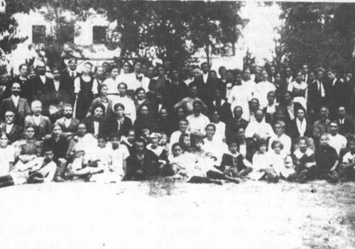

Беседа 92 от 3877 · Беинса Дуно
Протоколи от годишната среща на Веригата 1914 г. Велико Търново
Тази годишна среща на братята и сестрите от Веригата стана в Търново. Забелязваше се, че всички с нетърпение и възхищение са очаквали срещата, защото с горест преговаряха преминалото в 1913 год. – войни, неприятелски нашествия, земетръси и морове. То и стана причина лани да не се съберем, та при тази годишна обмяна на мисли в Школата за подвига всички очаквахме подновяване на изтощените сили и насърчение за по-интензивен подем в делото Господне.
Събранията станаха в миналогодишните места – колибите (вилите) на Ан.Бойнов и Бостанджиев. Вилата на първия служеше за преподаване, а оная, на последния – за трапезария.
Присъствуват 81 души. Има надошли и 34 гости от Търново, Cт. Загора, Русе и от разни села: Кръвеник, Гачевци и пр. Освен тях имаше и 27 деца, доведени било от приятелите на Веригата, било от гостите, но те, децата, изключително се навъртаха около трапезарията и без да щат, служеха за охрана, през деня, на помещенията, докато възрастните слушаха беседите.
10 АВГУСТ, НЕДЕЛЯ
При откриването на срещата, 10 август, времето е ясно, тихо и с приятно поносима топлина. Само тук-там разни сигналообразни облачета нарушават еднообразието в небосклона, който, с тях пък, придобива вълшебен изглед. Прекрасна утрин.
В 10 часа преди обед всички присъстващи членове, с поименно повикване, влязохме в эаседателния салон, който имаше следната обстановка: дълга маса във формата на паралелограм, покрита с бял ленен плат, върху който е проточена виолетова лента, символизираща сила. На източната стена на салона, отдясно, личеше ликът на Спасителя, под който бе поставено знамето на Веригата, поясняващо духовната и вечна еволюция, а над двете тия картини бе проточена портокалена лента, означаваща живота. Зад самия г-н Дънов, който заемаше първото място на масата, личаха: розовата (любовта), портокалената (живота) и ясносинята (Духа) лента. Съвсем вляво, над самия вход, бе поставен българският трикольор с една лента върху него, цветът на която не ни е познат. На западната стена, вляво, като гледаш към нея, бе поставен Пентаграмът, поясняващ петте велики добродетели, над който имаше жълта лента.
Първом влязоха жените, които насядаха пред масата, а след тях и мъжете, които заеха местата около нея. Повикването на едните и на другите стана по годината на повикването им във Веригата.
След като се наредихме, четохме „Добрата молитва" и изпяхме „Благословен Бог наш". Учителя обяви:
– Аз ви приветствам като добре дошли, от името на всички наши приятели. Приветствам ви от Името на Господа Нашего Исуса Христа. Това е първо събрание по рода си в Новата епоха. Вие сте в Новия Завет, в Новата епоха. Това събрание, което устройвам, е първо по рода си, защото е само в България. Христос иска от вас да имате една положителна вяра; вяра, която да внесе у вас всяка радост и веселие; вяра, която да ви въоръжи, за да понесете страданията, които настъпват за този свят. И понеже вие ще трябва да помагате, то, като пожарникарите, не може да се не изгорите и вие. Като помагаме на другите, ще пострадаме и ние, заедно с тях. Но страданията, това са Божествените благословения, които Господ ни изпраща. И тия страдания, които Той ни изпраща, са както тези на Христос, Който страдаше в Себе Си. Защото не страдаше Той от камшиците, които My удряха, а изпитваше вътрешни страдания. И ние, по този начин, ще
пострадаме вътрешно – ще имаме духовни вътрешни страдания, които като понесем, ще се и повдигнем.
Прочете страниците 5, 6 и 7 от книжката „Завета на цветните лъчи на светлината", като разясни:
– Духът вечен подразбира безсмъртието, към което ние всички се стремим. Казва се: „Бъдете съвършени и ви", т.е. да бъдем съвършени, както е Бог по отношение на нас съвършен в милост, благост, снизходителност. Първата дарба, с която трябва да започнете, то е милосърдието. Понеже Христос иде, то силата My ще бъде седем пъти по-голяма, отколкото в миналите векове, а следователно и прогресът на человечеството ще бъде такъв. „Златният светилник" означава Христовото учение, което сега се търси и което сега настава. Повечето от хората спят. Сега Седемте Духове действат, последната тръба е затръбила и вие всяко нещо, бързо и неуморно, ще гледате да го разберете, ако досега не сте сторили това.
Аз искам, на първо място, да имате вътрешно спокойствие, защото ние, в сегашно време, сме свидетели на велико събитие, което е настъпило на земята и което от хиляди години се е очаквало. В древността са говорили за него мъдри человеци, пророците; за него говорят и днешните гадатели, очаквали сте го и вие. Всички са говорили за идването на Христа и аз няма да ви го описвам, защото вие сами ще го видите. И казвам ви, защото ме питате: обърнете се към хоризонта, отгдето изгрява Слънцето, обърнете се в себе си към източната посока. Страх не бива да имате. Страхът ще обърне вниманието ви в противоположно направление, а Христос, към Когото се обръщате, носи със Себе Си Божествената Правда, Божествената Любов, Мъдрост, Истина, с които ще озари света и ще тури ред и порядък. Едни ще помилва, а други ще накаже. Едни ще прекара през огън седем пъти, а други ще повдигне. И за всичко туй срокът е 24 часа. Това е ултиматум – последен срок, безразлично дали ще се подчинят, или не. От всеки един, обаче, Христос иска отговор: да или не. Въпросът е твърде категоричен. Досега християнството е било неуспешно по единствената причина, че сме проповядвали на хора, които спят. А пък, за да може да се разбере истината, човек трябва да е събуден и които се събудят, за тях е възкресението. В тия 24 часа във вас ще настане голяма промяна, щото понякога ще се чудите – дали сте вие, или не. Но на вас да не ви е странно.
Това променение ще стане медлено, за да не се уплашите. В тази епоха, която настава, Христос ще ви даде място, за да My служите и вие ще бъдете доволни от тази работа, която ще ви даде. Но разбира се, това ще стане, след като се минат тези 24 часа. А в 24-те часа вие ще слушате страданията и плача на света: ще видите на земята да мрат с хиляди хора от глад, болест, от вътрешни революции. След всичко туй, Христос ще ви даде именно това служене, за което ви говорих. И понеже страданията на света са грехове, а греховете на света са наши грехове, то ние трябва да помогнем. Доколкото е възможно, ние трябва да облекчим техните страдания.
Най-първо, вие ще трябва да се запознаете с вашия ръководител, защото всички вие имате ръководители, които сега присъстват. На тези ръководители вие трябва да бъдете послушни, както ученикът е послушен на учителя. И ако отсега – нататък някой не слуша своя ръководител, той не ще може да присъства на Господнето събрание, защото тия духове ще бъдат всякога с вас и през всичките страдания на света вие трябва да слушате техния глас, който е глас на любов. Нашата земя е 13-та сфера, а тя е равна на ада. Тази Европейска война сега става в ада и Христос е, Който участва в това сражение. Но като думам ад, то не е едно лошо място. То е място на изправление: след хиляди години, когато хората се очистят там, Господ наново ще ги изведе на лицето на земята. Ние всички сега сме в ада – ни повече, ни по-малко. Войната, която става сега, става между светлата и тъмната страна на астралния свят. В тъмната страна сега става това сражение. И когато вие пристъпите към границата, ще видите Христа.
Седалището на Духа във вас знаете ли къде е? То е в една празнина между двете вежди – то е мястото на Божествения Дух, то е мястото на безмълвието. Човек, сам по себе си, представлява един кръст: вежди, нос и чело. Затова у нас Господ живее в центъра на кръста и когато ние намерим този център, няма вече да биваме разпъвани.
Когато дойде Христос, някои от вас ще бъдат на 21, други на 14, а най-малките ще бъдат на 7 години. Но това разбирайте вътрешно. И според степента на това вътрешно развитие, ще ви се даде и съответстващото знание (съответстващо, разбира се, на света), което ще разкрие Христос. И оная книга, за която е казано в Откровението – затворената книга, нея именно Христос ще отвори пред вас. На някои от вас Той ще прочете първите страници, на други – повече страници, но във всеки случай, не повече от двадесет и една. Така, който е на 7 години, ще му прочете седем страници, а който е 21 годишен – двадесет и една страници. В тази книга ще намерите всички правила за Новия живот, а сега вие знаете само приготовителните правила.
Но вие не можете да познаете правилата Господни, Христови, докато не познаете какво нещо е Божествената Любов. Любовта – това е първият Божествен творчески принцип в света. Всички истини ни се откриват посредством Любовта. Тя е, която е създала нашия дух, тя е, която е сътворила света. Затова е то, гдето търсим Христос, защото само Той може да оплоди нашата душа, да оплоди и всичките зародиши, които от хиляди години чакат този благоприятен случай.
Това, което виждате на земята, съществува и вътре в душата: всички растения и животни съществуват и в душата. Следователно, когато вие правите пакост на някое растение, на някое животно във физическия свят, правите пакост на растението или животното във вашата душа. Тогава се поражда болест – ето как се пръкнуват болестите. Защото външният свят е едно отражение на вътрешния, който съществува в нас. И тогава значи, че ние не можем да направим изменение вън, ако не направим изменение вътре в нас. Планетите, слънцата, що ги гледате на небето, това са живи същества, които са живели по-рано у вас и сега работят в небесните пространства. Искам да кажа, че и вие ще бъдете звезди, планети; и за вас ще пишат в бъдеще астрономите, както пишат за днешните. Сега, колкото една планета е по-далеч от земята, толкова нейното развитие е по-дълго. По–далечната планета е по-близо до Бога и тя има по-голяма слава.
Христос сега слиза от Божествения свят към нас. Събитията, които има да преживеем, са много интересни. Не си правете илюэии отсега нататък да бъдете щастливи на земята, т.е. да бъдете материално щастливи; защото всички ще бъдете горчиво излъгани. Материално щастие на земята вие не очаквайте. Тези 24 часа не са за това и затова в тях подобно нещо не очаквайте. Христос, Който вече ликвидира сметките, може да ви повика и ви каже: „Това не е ваше – дайте го!" И аслъ, виждаме, нали? Христос като дойде, каза, да се даде на българите отреденото им отпреди толкова и толкова години, но светът не им го даде – Европа отказа да приложи този закон и поиска да действа по стария закон. Обаче, започва се от държавите, та ще се стигне до отделния човек: кой каквото има да дава, ще го даде. Ще се разрушат затворите, из които всички трябва да излязат. А всички, които эащищават съвременния порядък, ще отидат заедно с него, защото сега вече не е „днес с пари, па утре вересия", а порядъкът ще е „днес с вяра, а утре с пари". Ами че как можеш да имаш плод, докато не си сял? Най-първо трябва да посадиш нещо в земята, за да имаш плод. А пък вярата, тя е сеене. Ако не сееш, ще си гладен. Всички вие думате: „Господи, благослови ни". Е, хубаво, пусни нещо в земята и аз ще благословя, казва Господ.
Искате още да видите Христа, но мнозина от вас са Го виждали, и то, виждали са Го много пъти, само че винаги почти са казвали: „Може да не е Той, може да е друг." Има примери и измежду вас даже, когато сте срещали Христа, но не сте Го познавали, защото сте се съмнявали.
Та сега в света се изпълнява стихът: „Отец ви благоволи да ви даде Царство." Хората нека си казват: „Вие ли ще оправите света?" Да, ние ще го оправим и ще го оправим сега. Турили сме вече огъня на четирите страни на света и всичко ще се запали и ще гори: чума, холера, земетресения и всевъзможни страдания. Свети Илия всичко ще разруши. И когато той направи всичко на каша, тогаз Христос ще прибере житото. Свети Илия сега вършее и неговата тояга е четиридесет оки и не се церемони. И след като той се разправи, ще се появи и ще дойде Христос, за да заговори Духът на Любовта.
В тези най-усилни времена Христос ни е събрал – ето, това е едно чудо. И Господ, за да ни събере, така е наредил работите, че България да кротува. Затова тя държи неутралитет, когато навсякъде другаде се бият. Затова и кротуват засега Гърция, Турция и Румъния. Това е едно от най-големите чудеса, които Христос върши. В България свещениците щяха да имат събрание на 20-ти август, но го отложили, защото времената са лоши. Но ние нашето събрание не го отлагаме, защото за нас лошо време няма. И действително, в по-добри времена, отколкото сегашните, право да си кажа, аз не съм живял. Сегашните времена са най-добрите, главно защото досега сте били роби, а отсега сте вече свободни; и тази свобода ще носим и разносим на всички други. Ние ще оставим Свети Илия да свърши своята работа, а след него, като овършее той, ние ще отидем да сеем. Обаче, докато Св. Илия борави, ние ще чакаме известно време, през което други има да работят. Всякой един от вас е същество колективно: имате познати, приятели, роднини. Вие, които сте собственик на къщата, имате и други, които живеят около вас; и всичките трябва да оправят сметките си. Човек сам себе си като мрази, мрази и другите хора и всяко сражение е резултат от това смразяване. А пък ние трябва да повдигнем вибрациите на света, защото, ако не сторим това, ние ще страдаме. Така е свързал Господ всинца ни с другите хора.
Христос е тук и аз бих желал да са отворени вашите очи. Постоянно се оплакват българите, че всичко им било вземано. То е въпрос. Това, което са им взели, е едно жабче, което ще прояде корема на тези, които са го глътнали, също както онези жабчета в реката Нил, които разяждат корубата [1] на крокодила, който ги е глътнал. Опасно е да се узурпира нещо, което Христос е дал. Цяла Европа глътна, каквото бе дадено на българите от Христа, но сега, ето, тази кражба излиза наяве, защото Христос ги хвана на мястото на престъплението. По този начин, Христос иде да съди света и тази съдба е вече неотменима. След тая съдба чакаме възкресение – ново тяло, когато мъжете и жените ще бъдат свободни, както в Райската градина. След смъртта си, Христос се чисти 40 дена; а вие, за да се очистите, ще са нужни от 24 часа до 40 години и най-много, след 40 години, всички ще бъдете очистени. Та всички страдания могат да продължат от този период до 40 години, а 24 часа, това са две и половина години.
Това е то ултиматумът. Другото време ще е приравняване на сметките. В 24 часа ще почне войната и Св. Илия ще ходи с огън и меч. Тези 24 часа започват от тазгодишното равноденствие – 9-ти март [2] 1914 год., и всеки един час съответства на един месец, а 24 месеца – това е един Божествен ден. По-малък ден от този не може за хората. За животните може, но за хората – не. Като се пресметне, колко години ще струват една Божествена година, ще видите, че ще излезе, че българският народ е прекарал в робство само една нощ, т.е. малко повече от половин ден. Интересен е паралелът, който съществува между еврейския народ и нашия. Така, след две и половина години ние, българите, ще минем Йордан, когато ще бъдем в Ханаанската земя. А в пустинята ще бъдете още две и половина години. Всички ще бъдете в астралния свят. След две и половина години разбирайте, че ще бъдем в телата си на границата. Отсега нататък всички трябва да очакват светли дни, като още веднъж ви казвам: вяра, вяра, вяра и вяра!
Много души от невидимия свят сега са желали да бъдат долу на земята, за да видят какво става, но не им се е отдало. Наблюдавайте зорко това, което става. Не се плашете. Каквато работа си имате, не я напущайте, работете си. Светът от нищо няма да ви лиши. А ако е въпросът за поминъка, ето, казвам ви: не бойте се, насъщния хляб ще го имате. Светът може да го няма, но вие ще го имате. Светът може и да гладува – нека най-сетне малко и да погладува, те не са постили, нека попостят малко. А ние, тази година, ще се срещнем с неприятеля лице в лице. Досега те са ни атакували, а сега ние ще ги атакуваме и то, по пет на нож. Затова, всякой един от вас трябва да си наточи ножа, а който няма нож, трябва да си набави такъв.
Нашите бдения тази година ще започнат, като влезете всички в горницата, на молитва: първом по един, после по трима, а най-сетне на групи от по девет души – девятката тази година ще работи. И ще знаете, че молбите и моленията ваши ще са главно в три направления: 1. За прославянето Името Божие на земята; 2. За идването Царството Божие на земята и 3. За изпълнение Волята Божия на земята. И не само сега – и през цялата година ще се молите в тая посока, но и ще се стремите с дела, слово и мисъл в същата посока. Ще се молим за домашните си, за добрите земеделци, за добрите търговци, всички учители, свещеници, всички жени и майки, които искат да вършат Волята Божия; за България, Русия, Сърбия, цялото славянство, за всички лица и държави, които искат да вършат Волята Божия.
Ще ви съобщя и едно желание на Христа от вас: никой от вас да не казва никому нищо от онуй, което види в салона и горницата, защото съчетанията, които ще видите, ще бъдат за вас една сила през годината и всякога, и всякъде.
----
[1] Коруба(диал.)- черупка, обвивка (бел.ред.)
[2] 9-ти март - датата в стар стил съответства на 22-ри март нов стил (бел.ред)
11 АВГУСТ, ПОНЕДЕЛНИК
Сутринта времето бе студено и облачно. Черни облаци, в дъното на небосклона, след изгрева на слънцето стават бели и се пръскат по небето. Тихо, без никакъв вятър. Към 10 часа слънцето силно изгря.
В 10 часа, когато насядахме по местата си, имахме тайна молитва, изпяхме всички прави: „Свят, свят, свят Господ Саваот" и след това, като прочете 20-та глава на Евангелието от Матея, г-н Дънов каза:
Ще взема 21-ия стих от прочетената глава като тема за размишление: „А Той й рече: „Що искаш?" Казва My: „Речи да седнат тези двамата мои синове един отдясно, а един отляво..."
Често ние се запитваме, от какво произтичат споровете в обществото. Между народите, в църквата, в училището, между философите и учените, и между всички учени класи има все спорове. Тук виждаме една майка пристъпва и иска нещо, което счита, че може да иска от Христа. Тя си дава жалбата и проси, щото един от синовете й да седне отдясно, а другият – отляво. Желанието й беше добро, но просбата й беше лоша. Ще кажете: „В какво се състои лошотата?" Но, за да седнеш отляво и дясно, знаете ли какво значи? Значи единият да бъде в Небето, а другият в ада. И затова Христос отговори: „Не знаете какво искате!" Не било Негова работа, кой да седне отляво и кой отдясно, защото, ако единият е грешен, ще иде в ада, а който е праведен, ще бъде в Небето. Затова много често, понеже отиваме в лява страна, отиваме в ада, в 13-тата сфера. И всички вие сте искали да седнете от лява страна, затова са ви сполетели разните нещастия. Всичките духове, които ви карат да искате лявата страна, са искали да бъдете в 13-тата сфера, която е равна на кръста, който е една теглилка.
Затова ние най-напред трябва да се научим, какво и как да искаме нещата. Аз зная, че щом разберете, че лявата страна е 13-та сфера, никой няма да иска да седне вляво. Ако опре само на Господа, в Небето има само дясно, а няма ляво. А окото, всякога едното вижда правото, а другого е 13-та сфера. Чрез дясното око ние намираме пътя за Небето, а с лявото гледаме надолу, за другия свят. Следователно, ние желаем неща, които са несъвместими с Божията воля, а желаем и неща, които са съвместими с Неговата воля. Затова ние трябва да гледаме, от кое око произтичат нашите желания, дали от дясното или от лявото. Ако ви поставят от дясна страна един лош човек, той ще узнае всичките ваши тайни, но ако ви се постави от дясна страна един добър човек, ще познаете Божествените истини, които се крият в него. И когато ние казваме, че трябва да се затваряме, то е криворазбрано. Не може постоянно да си затворен – то е пък друга крайност. В това отношение, служете си със следното правило: съберат ли ви с лош човек, не давайте му дясната си страна, защото ще ви узнае тайните; дайте му лявата си страна, защото тя е широкият път в живота, докато дясната страна е тесният път. Не давайте дясната страна на лошите хора, защото духовете ще направят пакост във вашите души и ще ви спънат за известно време. Дясната страна е с широко поле за действие, а лявата носи проклятие. Но Господ е с вас и Духът, който ви ръководи, ще ви яви и научи, кой е човекът, който можеш да туриш от лявата страна и кой, от дясната страна. И когато туриш от лявата страна един човек, то предвещава лошо. Когато пък лош човек седне отдясно, тогава пренесете го мислено в лявата страна. Обяснявам ви тия закони, за да ги знаете и се пазите; сега времената са много натегнати и винаги може да ви се напакости. Ние ще посрещнем тия утеснения най-смело, без да се свенуваме от тях. И така: злоба, завист, мъст и тем подобни дръжте вляво, а всички добродетели дръжте вдясно.
Сега, как можете да познаете, един човек дали е за отляво, или за отдясно? Ето как: щом се породи в ума ви съмнение, подозрение, някакво стеснение, да знаете, че лявата страна е там; но вие, схващайки ръководството на Духа във вас, можете да пренесете всичко на дясната страна. Например, народа ние трябва да го държим вдясно, защото мнозина пожелаха да го оставят пак от лява страна. Обаче той, па и вие заедно с него, достатъчно сте стояли отляво и вече няма нужда тепърва пак да ви оставям от лява страна. Имаше и даже още има опасност да ни наложат лявата страна, но ние ще настояваме мислено работата на тоя народ винаги отдясно. Когато кажете в себе си: „Ще направя това и това", запитайте се – в лявата страна ли ще направите, или в дясната. Защото понякога уж желаем добро, а пък искаме да ни турят вляво, докато ние трябва изрично и настойчиво да желаем – да ни турят вдясно.
Един от приятелите ми внушаваше да говоря за спасението; и аз ето сега говоря ви, че за да се спасите, трябва да обръщате дясната страна към Христа, защото в дясната страна има всякога единство, а в лявата – всякога разногласие. Когато идете при Христа, казвайте: „Господи, имам едно желание; моля ти се, покажи ми какво желание имам, добра ли е мисълта или не." И ако ти покаже, че мисълта е добра, ще те тури в дясната страна, но ако ти каже, че мисълта не е добра, тогава нищо Му не казвай, защото вече и така си в лявата страна и не може да искаш нищо.
Виждате, че Христос отказа на искането на майката и не остави нейния син вляво, но ако беше я послушал, синът й щеше да бъде нещастен. И вие, например, защо сте страдали? Защото сте били от лява страна на Христа. И затова сега трябва да се стараете, да бъдете от дясната My страна, като My кажем: „Господи, помогни ни вече да искаме дясната страна, защото вече се наситихме да бъдем в 13-та сфера." Да, злото вече започва отляво и отдясно – правият път и кривият път.
Друга диагноза: разгледайте лявата си и дясната си ръка и ще видите, че лявата ръка е по-тлъста и по-мазна; и ако правите даже измерване, ще видите, че лявата ръка се различава от дясната. И сега, эащо работим повече с дясната ръка? Защото само като работим с дясната ръка, можем да се избавяме от лявата. От чисто мистическо гледище, като работим с дясната ръка, всякога работата, която върши тя, благославя се. И искаме, от излишъка на дясната, да се благослови лявата ръка.
Всичко това, което ви казвам сега, е един закон, който не бива да казвате никому, защото, който го каже, ще изгуби всичките си благословения. Ние искаме действително да правим добро на хората, но не желаем, като им правим доброто, да правим пакост на себе си. Само на съпруга си – мъж на жена си, или жена на съпруга си – можете да го съобщавате, но при условие, ако сте уверен, че тя или той вярват, както ти вярваш. Да.
За това тълкуване на този стих, отнесете се до който щете сведущ църковник и богослов и го запитайте, да ви каже нещо, но без да му съобщавате от онуй, което вие знаете; и направете сравнение между тълкуването, което той ще даде, и това, което тук слушате. Ако той ви запита нещо, ще кажете, че сега се учите. Бих ви говорил много откровено, но сега има тук ненапреднали духове, та е възможно да изтече маслото, което ще се тури в кандилниците им.
За дясната и лява страна като учите и наблюдавате, ще се уверите, че едни животни вървят вляво, а други вдясно; едни пеперуди даже летят вляво, а други вдясно. Когато някой дойде при тебе и поиска да те мами, тури го в себе си от лява страна на Христа и по този начин ти тутакси се освобождаваш. Следният случай е характерен: ученици направили беля в училище, търсили пакостника, но не могли да го намерят. Събрали учениците в класната стая и като запитали – кой е пакостникът, един ученик излязъл и казал, че е той. А той бил от лявата страна.
Да. Пазете тези истини. Не ги съобщавайте никому. Не хвърляйте бисерите на свинете. Не се поставяйте от лявата страна. Спасението на човечеството е, да се постави от дясната страна на Христа. Отдясно на Христа човек върши всяка добродетел, защото Божествената деятелност е само от дясната страна. Ако турите лявата страна, ще действат само законите на лявата страна. Ясно ли ви е всичко туй?
Някои в събранието се обадиха:
– Не, не ни е ясно.
Ако във вашия ум се крият малки някои препятствия и съмнения, заедно с някакви нежелателни чувства, тогава аз не мога да хвърля светлина на ума ви.
На зададени въпроси се отговори:
– Има молитва, изказана с механическо изговаряне; а има и с дълбоки чувства и желания, гдето вземат участие душата, умът, силата и волята. При такава молитва Господ ни поставя от дясна страна. То е обширен въпрос, с обширни закони и правила, по които и нашето тяло е направено. Аз днес бях намислил и си бях наредил да ви говоря върху любовта, но Господ ми каза: „Ще
им говориш върху 20-ий стих".
– Желание и мисъл не са едно и също, но има желание, без да го искаш; а има
желание, което го искаш. Желание и искане тоже не е едно и също. Най-умният, Божествен човек беше Адам, който и даде име на всяко нещо и първоначално, всяка дума си имаше своето определено значение. Във вас всинца ви аз виждам запалени свещи, от които някои светят повече, а някои по-малко. На някои пламъците се колебаят, а това показва, че вътре в тях има проветряване.
– Някои казват: „Дали, аджеба, ще мога да направя това и това, що ме учат?" Но тия, които се питат така и отговарят, че не могат, те са за лявата страна, гдето ще изучат своите уроци.
– Стремеж и подвиг тълкувайте така: трябва да вървиш напред и нагоре, също както птицата, която постепенно-постепенно прави своя наклон нагоре.
На въпрос от Симеон Драганов, Учителя отговори:
– Аз прекрасно бих отишъл в пустинята и си бих прекарал живота, но съм ви събрал тук, за да имам главоболие с вас, защото такава е Волята Божия.
– Господ когато каже, че ще дойде, Той ще дойде и ние можем да бъдем като овчаря, или като Моисей. Аз бих желал да бъда на мястото на овчаря.
– Вие можете да четете каквото искате; даже аз с готовност ще ви препоръчам четиво, книги, каквито искате, обаче, не изпускайте предвид, че тук ви се дава от Духа нещо, което да ви ползва, за да можете да работите. И отсега нататък за мен ще е важно – всинца да бъдете верни и истинни. Верни – да не лъжете, а истинни – да ви не лъжат.
– Досега Христос Го имахме за Спасител, а после ще стане Господ и ще настъпи въпросът, дали да Го поставим от лявата страна, или от дясната. Аз ви считам и гледам на вас като на мои по-малки братя, на които се радвам, когато успявате; но когато грешите, ще ви потегля за ушите. Защо? Защото искам да станете по-умни, та още повече да успявате.
Първото нещо, което ви е потребно, когато искате нещо от Небето, е да знаете, къде искате да бъдете: где именно иска вашата майка да ви тури. Искам да се освободите от всичките си лоши привички и като узнаете – отляво или отдясно, да напредвате в пътя си, защото времената са усилни и работата е спасителна.
Днес ще се започне бдение от 5 до 7 часа, а утре, 12-того, вторник, от 5 часа сутринта до 9, по трима.
Който иска да пита нещо, да си го напише и подаде; аз ще отговоря, ако въпросът е важен и ползува самия този, който го задава. Искам тази година да направя опит с вас, защото от това виждам необходимост.
Молихме се с „Добрата молитва", на колене изпяхме „Тебе поем" и в единадесет и половина часа събранието се преустанови за в три и половина часа, подир обед.
В три и половина часа, насядали по местата си в салона, Учителя ни продиктува следната „Лозинка":
Първо: За прославлението и осветяването Името на Господа Бога Нашего на земята между человеците и верующите, и избраните от Веригата на Господа на Словото – Спасител, Покровител, Който въздига и възкресява мъртвите и туря всичко в ред и порядък навсякъде; и да се благослови Името на Господа Исуса Христа, изявеното Слово Божие, и с Него всички, които Го любят.
Второ: За идването на Царството Божие на земята, между человеците и в сърцата на верующите, и в душите на избраните; и да се тури в действие всяка правда, всяка доброта, всяка любов, всяка мъдрост и всяка истина; и да се възцари Господ Бог Наш и да се изпълнят думите на Господа: „Отец е благоволил да ви даде Царство"; и да се всели Духът на Господа Исуса Христа между нас и да се изпълни предвечното намерение на Отца Нашего на светлините и на светлите духове, Комуто да бъде слава и чест, и поклон сега и всякога, и през всичките векове.
Трето: За изпълнението на Волята на Господа Бога Нашего на земята, както е Горе на Небето, между светлите ангелски ликове; и да се въдвори законът на Истината, Любовта и Правдата, за да бъдем всички в едно тяло и в един дух; и да се въдвори ред и съзвучие, и хваление, да ни се даде знание да Го славим и да се радваме всички на Господа и Неговите дела; и да се всели Той в нашия живот и в делото на ръцете ни. Да даде живот и здраве, и дългоденствие на всички, които Нему уповават, и да ги избави от всички напасти на злото и лукавия, да внесе мир в душите им, да им даде изобилие на Своите благости; да спомни Господ Бог наш Своите обещания, да се смили над всички страдующи, да благослови всички верующи, да укрепи своите избрани, да им даде сила, знание, мъдрост и любов, да побеждават заради Него и Неговото Свято Име. Да ни даде победа над всичките ни врагове, да победим докрай и да послужим на Господа с радост и веселие, през всичките дни на нашия живот. Да ни озари с виделината на Своето лице, да ни направи силни и крепки да творим добрата My воля; умни и незлобливи да ходим пред Него с пълнота. Да изцели всичките наши страдующи братя и сестри, да благослови домовете им и децата им с тях наедно, да благослови всичките им добри начинания на душата и духа, и така да се въздигне Господ Бог наш в нас, както е Горе в Небето. Амин.
– Тези са те, основните точки, върху които можем да градим. Всякой ден, в час, в който вие ще си изберете, по-предпочитателно сутрин, ще четете тази „Лозинка" – било само първата част, било втората, било само третата, па било и трите заедно. Ако четете цялата „Лозинка", то първата й част ще четете сутрин, втората – на обед, а третата – вечер. А когато четете по една част на ден, първия ден ще вземете първата част, втория – втората, третия – третата и т.н.
Задължително е да се чете, обаче, „Лозинката" всякой ден, а всякой може да усвои един от избраните начини.
Всякой ще се моли според диктовката на духа си и Господ ще ви покаже и упъти, как да се молите. В духовния свят вие не се намирате на еднаква зона, нито всички – на едно и също място, така щото, според изгрева на вашето слънце ще се молите. Повелението на Духа е – чрез тази „Лозинка" всякой ден да се ограждате и затова ежедневно трябва обезателно да я четете, по един от казаните начини. Тогава само за вас е изключена опасността.
Друго, второ: в един от дните през седмицата – неделя, вторник и петък, след обикновената молитва, ще правим поменик на всички членове от Веригата, включая и онези, отсъстващи от нея, за които се каже допълнително, за гостите на Събора, а така също и за други съмишленици, приятели и роднини, за които се позволи отпосле, като при споменаване имената им, си представяте лицата им и искате от Господа за тях изпълнение на „Лозинката". Но може и в трите тия дни да се прави този поменик – има свобода, обаче, поне в един от казаните дни е задължително да се прави под страх от страдание. Който избере един ден, този ден ще бъде неделята, и то задължително. Да, поменика непременно правете веднъж в седмицата, защото като споменавате тия имена, всяко име е сила. Молете се даже и за външни – вие ще бъдете, които ще се ползвате от това; благословенията чрез вас ще дойдат за тях.
Нам е необходимо да изговаряме Името на Исуса Христа, за нас и за другите, защото това име предизвиква онези принципи във вселената, които творят, които принципи са Божествени и носят милост и благост. „Йот Хей Вав Хей", тъй се произнасят на еврейски тези велики принципи и природни сили, които в трите свои разклонения носят благословенията на света, ако правилно се зачитат и разбират.
Тук Учителя се впусна и обясни тези разклонения в подробности, но пишещият настоящето не можа да ги разбере и схване.
Затова вие трябва да произнасяте Името на Господа Исуса Христа, защото То е, което съдържа равновесие в природните закони; това – едно, и друго: с произнасянето му съзнателно и с благоговение повикваме деветте ангелски чина, да работят всичките заедно.
Към църквите трябва да се отнасяме с уважение и почитание. Пред Бога не е право да осъждаме църквата – не сме ние, които ще осъдим църквата, а Христос е, Който ще я съди. И като живеем ние добре, това е, което ще я осъди. Към църквите ще имате всичките благородни желания, защото, ето, и ние ще работим и работим за нейното повдигане. Православната, католическата и протестантската църкви ще обичаме заради Господа и Господ, като е с нас, ще ни научи как да постъпваме, защото ще ни даде мъдрост и знание.
След като се молихме с „Добрата молитва", в 5 часа вечерта свършихме, за да се подкачи бдението, което трая до 7 часа и което се извърши с влизане в горницата, един по един.
== 12 АВГУСТ, ВТОРНИК ==
Времето сутринта бе студено, но след изгрева на слънцето, лека-полека се стопли и през целия ден имахме топло и тихо време. Слънцето идеше през редки, бели, красиви облаци. В 5 часа заранта хората в Търново усетили земетръс, което отсетне се оповести и в пресата. Приятелите – весели и спокойни.
От 5 до 9 часа преди обед има бдение по трима.
В 10 часа се събрахме в заседателния салон и след като изпяхме „Всякое дихание да хвали Господа", Учителя каза:
Ще ви говоря върху думата „познание". За да може човек да добие качеството да познава нещата, трябва да има ума на един мъдрец. Да вземем например един плод: ябълка, круша, слива или череша. На пръв поглед всякой мисли, че има познание за черешата или крушата или сливата, но ако ни запитат в що се състои нашето познание, едва ли можем да дадем точно съответствуващ на истината отговор. Защото ако вземете сливата, да кажем, в нейния зародиш, вашето понятие ще е, че тя е със стипчив вкус; когато наедрее, ще и се приложи известна киселина, а пък в края същата слива ще намерите, че е приложила сладчина. Значи, в тия три периода имате диаметрално противоположни неща и следователно вие ще турите една и съща слива в три категории и като че ли ще имате пред себе си три различни сливи. И ако тая слива един философ я видеше в нейния зародиш със стипчивия и вкус, друг я видеше, когато е наедряла с киселичкия и вкус, а трети философ -- когато вече е узряла и има приятна сладчина, та питам аз нямаше ли тия трима философи да започнат да спорят? А между това, най-вярното в този спор ще е, че всякой един от тях има пред себе си по една трета от същата слива, т.е. те говорят за процеса на един и същ предмет, който минава своето развитие. Следователно, ние трябва да разбираме и знаем основния закон на познанието, т.е. когато искаме да изследваме един предмет, трябва да намерим двете му крайни точки: неговото начало, зародиша му, и неговото пълно развитие, както и да изследваме вътрешната му междина.
Във връзка с познанието, аз ще ви говоря сега и върху първата глава на Битието, което е и битие на човешката душа. Казва се там (Битие, гл.1, ст.1), че: „В началото създаде Бог Небето и земята", т.е., Бог е определил двете крайни точки, в които е искал да работи, като е направил Небето и земята. И то подразбира не тази земя, която видите, защото тя, в сравнение със Земята, за която аз ще ви говоря, е един малък остров. В цялата вселена има само една Земя, едно Небе и едно Слънце. Има много слънца, но другите слънца, по отношение Слънцето, за което ни е думата, са като нашите електрически лампи, по отношение на естествената светлина. Тия светила, които виждаме, са само турени да осветяват, само за тия същества, които са около тях. Под думата „Небе" се подразбират съществата, създадени преди човека, а те са: Ангелите, Архангелите, Херувимите, Серафимите и човешката душа. Да, „Земята", то са човешките души. (Чете стиховете от 2 до 5 включително.)
Върху „Земята", значи, нямало ред и порядък, „неустроена", „пуста"; но „рече Бог: Да бъде виделина и стана виделина". Тъй. Виделината е една Божествена сила, която скрива вътрешните качества на нещата; т.е. Виделината трябвало да дойде, за да определи нещата, па и нещата да се самоопределят. Първата сила, която е дошла в света, то е Виделината, която е започнала своята работа. „Ден" в стих 5 е символ на Виделината, която е една сила положителна, а „нощ" е символ на тъмнината – сила, отрицателна на Виделината. И това е един период, за който можем да кажем, че е период на проява на най-висшите духове, които са взели участие в творческия принцип на вселената.
По-нататък се говори за твърдостта. (Чете стихове 6 до 8.) "Твърд". Защо Господ направи тази "твърд"? Да не би тези напреднали същества, толкова красиви, да се увлекат от земните неща. Защото, ако вие, които имате лаборатория, заграждате я, да не би някое дете да влезе и я угрози; то колко повече Господ трябваше да направи преграда между земното и небесното, като с това определи развитието на човешките души! Да, тази преграда показва мястото, отгдето са започнали хората да слизат надолу, също както пък екваторът е мястото, през което хората отиват на север и са започнали да се отдалечават. Образуват се два противоположни полюса. Така процесът на корените на едно дърво показва пътя на нашата еволюция, а процесът на клоните показва пътя, през който ангелите са минали. Но понеже има диаметрално различие, то ангелите идват, когато слизат надолу, а ние идваме, когато отиваме отдолу – нагоре. Ние сме започнали да учим отгоре – надолу и затова ангелите са, които имат правилно схващане на нещата, поради което са и поставени за учители на човечеството.
(Чете стихове 9 до 13.) „И стана вечер, и стана утро, ден третий", а то значи; първият ден – за първото тяло, вторият – за второто, а третият – за третото тяло. (Чете стихове 14 до 18.) Чудят се някои хора и учени, как е възможно да се направи това, за толкова малко време. У човека са много работи невъзможни, а у Бога е всичко възможно. Божествената Земя, към която ние отиваме, далеч се различава от мястото, в което сега живеем и което, в сравнение с онази земя, в която отивате, е пустота и един малък остров. И така, в четири дни Бог направи жизненото тяло, жизнената енергия, принципа на разплодяването и размножаването. А понеже човек, в своето слизане, е отишъл много далеч, слънцето е поставено, та един ден, като се върне и дойде, да си припомни и знае мястото, отгдето е минал. И преэ тия четири години, знаете ли през колко врати сте минали? В тия четири години, вие сте се забъркали с четири планети, та този сега е четвъртият ви затвор, а след него ще влезете в 5-ий, 6-ий, 7-ий, подир което ще се върнете назад и ще ви останат още три периода, за да се съедините с Бога.
(Чете стиховете 19 до 25.) Тук имаме вече обличането на човека в неговото пето тяло. Тия животни са петото тяло на живота, след което иде шестото поле, гдето „...рече Бог: Да направим человека по образу Нашему и по подобию Нашему..." Да владее, но да владее над риби, птици, скотове и гадове, а не се казва, че ще владее и над растенията.
(Чете стихове 25 до 31.) В ума ми стои мисъл, че може да се срещнете с мъчнотии и да се питате, как може да стане всичко това по този начин. „Докажете" – ще кажете вие. Добре, но за да ви докажа, трябва да се вземат всички фази – необходимо ще е да ви поставя в магнетически сън, чрез който да ви покажа пътя на вашето развитие, как сте се движили; и като направим една голяма разходка из пространството, ще видите, че два дни след това, вие ще имате вече друго понятие. Да, за да имате съвършено вярно понятие за сливата, трябва да я проследите в нейния зародиш, в нейното наголемяване и когато узрее. Тогава ще знаете и вида й, големината й, вкуса й. Така е и с живота. Магнетическият сън ще ви даде възможност да проследите хода, перипетиите, фазите на живота, създанието и чак тогава вашето понятие ще е понятие правилно, пълно, зряло, безпогрешно. И един ден, ние все ще направим една такава разходка, за да опитате; но изискват се условия – тежки сте още да летите в пространството, трябва да поолекнете...
Тодор Стоименов: Моля, изпратете мен в пространството за тая разходка, аз съм готов.
– Ти ли? И ти не си готов, защото тежиш десет хиляди килограма...
Да, трябва да се повдигнете, а за да се повдигнете, нужно е изменение движенията на вибрациите. А не че не мога да ви докажа всичко. Всичко мога да ви докажа, но сега именно, не мога да го направя, главно защото нямате билет за път. Когато отиваме на разходката в пространството, аз искам всичко да ви дам за път, но за пътен билет само пари не давам. В това място, гдето ще отидем, разноските ни ще поемат, но за билет пари не давам. На всяка станция ще ни посрещат, защото този път е дълъг, има разни духове, царства, страни и държави. Така, най-напред ще ви се изпречат четири велики царства: първото е Царството на гномите – духовете, които образуват твърдата материя и разполагат със снаряди и лаборатории. Златото и всички скъпоценности са тяхно изделие, те ги правят. Като преминем тяхното царство, ще дойдем до границите на Царството на ундините – духовете на водата, които са добре разположени към вас. После ще се срещнем с Царството на силфите – въздушното царство. Те са духове, които, може да се рече, са най-разположени към нас; затова ще ви приемат радушно...
Дядо Петър Тихчев: Ще ни почерпят ли?
Ами че те ви черпят всякой ден, защото праната, която гълтате ежесекундно и подкрепява и съживява вашата жизненост, се намира в тяхното царство.
След това царство ще преминем през Царството на саламандрите – духовете на огъня. Те са духове сериозни, положителни и твърде лаконични – те са като англичаните: само с пръст ще ви посочат пътя, без да говорят. От тях угощения няма да очаквате, но ако имаме лекета, те ги пречистват. И най-сетне, ще стигнем до ангелите, отгдето ще ни се отдаде възможност да видим, как човек е слязъл и възлязъл. Ето на, този е пътят за Небето. И във вашето слизане, отгоре, вие сте видели тия царства, но сте забравили и всичко из вас е изчезнало. Сега ви е ясно, че като премине човек от този свят, не отива направо в Небето, нали? Но пак ще повторя, че когато сте дошли, всичкия този път сте преминали, но сте забравили. Сега у вас е останало само едно смътно понятие.
Геор. Давидов: Всичко туй не обяснява ли се с притчата за богатия и сиромах Лазар?
– Ако ви прекарам през тия царства, вие няма да ме питате по този начин, а ще кажете като онзи човек, когото Христос изцелил: „Едно знам, че бях сляп, а сега видя" (Йоана: 9;25).
Сега, четирите царства, те са четирите елемента, от които човек е създаден и неговото грехопадение се състои именно там. Тия четири царства определят нашите отношения на земята, отношенията на нашето тяло. Например, ако преобладават у нас гномите, значи, че у нас има повече твърди неща, твърди вещества, от които се явяват и разни болести. А то, пропорцията трябва да бъде – една четвърт за всички – всички видове елементарни духове трябва да владеят по една четвърт от нашата физика. Иначе, преобладават ли гномите, например, то е анормално. Анормално е и когато другите вземат връх и са в по-голяма пропорция. Значи, ние винаги трябва да държим равновесие между нещата у нас; разбира се, като се научим предварително, кои от тия духове, какво именно култивират у човека. Както, например, знаем, че нашите желания спадат към категорията на ундините, духовете на водата. Там се култивират желанията.
И така, когато се казва, че сме сънаследници на Христа, показва, че ще завладеем тези четири царства, които сега ни се неподчиняват, тъй като виждаме, че саламандрите ни изгарят, ундините ни удавят. Следователно, тия елементи сега ни са господари – владеят те нас, вместо да владеем ние тях. С тях, лошите духове, тъмните сили ни постоянно изкушават и за нас единственият околен път е – да възпитаме нашето желание и да сме внимателни в нашите действия и стремежи. Тогава и само тогава тия духове не ще могат да ни завладяват.
Помогнете си тук и със следната важнейша истина: душата и духът – те са два полюса; по два полюса са сърцето и умът; силата и животът; мъжът и жената. Така мъжът и жената търсят силата и живота; силата и животът търсят сърцето и ума; сърцето и умът търсят душата и духа; а духът търси Бога. Това правило е най-порядъчният терк [1] и ако търсите терк, с който да си обясните тия неща, няма по-добър.
Христос иде и ако излезете да Го посрещнете, непременно ще преминете през тия четири царства. Най-напред ще Го посрещнете през царството на водните духове, защото те са, които ще My дадат каляска. И всяко царство ще My даде по нещо от своите елементи, докато каруцата стане огнена. И тъй, през първото царство, Царството на гномите, вие сами ще минете, а ще Го посрещнете в облаците, царствата на ундините и силфите.
Започнете, прочее, да размишлявате така: дали е устроено за вас Небето и Земята. И искайте, щото Господ да направи твърд във вас; и всичкият този процес, описан в първата глава на Битието, искайте да стане във вас. Гледайте сега колкото можете да се освободите от вашия тежък багаж, щото, като дойде Христос, да можете да си вземете необходимия багаж и веднага да бъдете готови. А за времето сега не можете да знаете – като идем там, ще ви доизкажа това, което не съм ви казал. А сега гледайте да си досвършите работата на земята, та да ви каже Христос: „Добре, рабе добрий и верний; на малкото си бил верен, над много ще те поставя; влез в радостта на Господаря си." (Матея: 25; 21)
Иэпяхме всички „Възкресение Твое, Христе Спасе", подир което Учителя продължи:
Защо днес ви се даде истината за душата и духа, сърцето и ума, мъжа и жената? Чрез сърцето си ние научаваме чувствата и то трябва да влезе в съприкосновение със света. А пък умът ни е даден, да изучаваме света и мислите. Значи, ума трябва да превеждаме в пространството, а сърцето да приведем до всичките хора. Защото, за да познаем силата на един човек, трябва да влезем в съприкосновение с други хора. Така и сърцето трябва да го изпратим в другите хора, та да дойде в съприкосновение със сърцата на другите, тъй като, ако искате да узнаете за сърцето на някого, вие трябва да влезете в сърцето си в съприкосновение с неговото. Вие често казвате, че познавате някой човек. Лъжете се. Може да познавате лицата на хората, но сърцето на човека, неговия ум и душа, за тях вие имате слабо понятие. Даже някои са с претенцията, че Христос познават, но Той далеч не е това, което си Го представят; защото, колкото и да е вярно това, що казват, именно, че Христос ще дойде в сила, пак и тук Той ще бъде нещо повече. Излиза, следователно, че най-голямата глупост на хората е, че много знаят. Казва ни някой си: „Никой, никой не ме обича". Е, добре, питам аз, как ще те обича, когато ти не влизаш в съприкосновение със сърцата на другите? А между това, Господ ни търпи и търпи, като постоянно ни казва: „Учете се, учете се и учете се, защото това време е кратко и няма да го повърна, и затова, учете се; всякой ден и месец носят по едно благо, което трябва да запазите."
Да, ние трябва да дойдем до положението – да знаем, че знаем. Вие се страхувате, че имало военно положение, или че някой свещеник казал това, или онова. Но и ние казваме: нека дойдат да опитат нашата сила. Нека опитат, дали ние сме горещо, или студено желязо. Не бива да се страхуваме от тогоз или оногоз, че щял да ни направи това или онова. Такъв страх не подобава. Гдето е Господ, няма разединение, а гдето липсва Христос, има разни прения и несъгласия и всевъзможни вярвания и невярвания. Секта правят само ония хора, които са лишени от Божествения Дух, докато, напротив, хората на Божествения Дух въдворяват прославянето Името на Бога на земята, идването на Царството My на земята и изпълнението на Неговата Воля.
Често пъти ме питате, какво да казвате на ония, които ви питат – какви сте. Какви ли сте? Отговаряйте на този въпрос отсега нататък така: „Ние сме от онези, които нито лъжем, нито се лъжем." И ако мъжът и жената не се лъжат, би настъпило велико благоденствие, но сега светът страда и страда, защото се лъже. Ние ще се молим за всички, но всички пък, които противодействат за идването на Царството Божие, те са наши неприятели. Два пътя има: или с Христа, или без Христа. Земята същата ли е днес? Не. Всичките неща се изменят. Но и сега трябва да има светии, както е имало едно време, и ние следва да имаме положителна опитност. Как така – питат се някои – има ли духове? Духовете не се връщали – добавят други. Хубаво, за вас не се връщат, но за мен се връщат. Връщат се и присъстват с нас. И сега има много наши приятели, които са ей сега тук. И много думи, които ви говоря сега, са думи Христови. Тази истина все ще я проверите един ден. Аз наистина не ходя в църква, но винаги съм в нея. В църква, направена от камък, дърва и кал, да, не ходя, но постоянно съм в Църквата, същинската Църква, в която аз стоя постоянно и в която искам всинца вие да пребъдете. Казвам ви: ходете си в църква, обичайте свещениците, но живейте с Христа. В този закон седи спасението на българския народ и на всички вас. Щом нашата вяра почне да се съкращава, Христос каза: „Малко дайте!"
Дядо Петър Тихчев: Слава на Господа, това e така, опитал съм го!
– Искам да имате правилно схващане за нещата и не бива да се вплитате в старите неща. И тогава ние ще бъдем далеч по-православни от другите.
В 12 часа събранието се прекъсна, а в 4 часа подир обед жените подкачиха своето бдение, което свършиха в 6 ч.
В шест и половина часа вечерта всички – мъже и жени, се събрахме в заседателния салон. Изпяхме песента на душата „Грешна душо", молихме се с „Добрата молитва" и четохме прави „Хвалата" (Хваление). След това Учителя съобщи, че редът е – утре, от 4 часа заранта, мъжете да подкачат бдението на групи от 9 души. Първата група се състои от лицата: Пеньо Киров, Тодор Стоименов, Илия Стойчев, Димитър Голов, Петко Гумнеров, Костадин Иларионов, Анастас Бойнов, Деньо Цанов и Петко Епитропов. Тази е първата група, която утре, 13-того, в 4 часа сутринта, ще се яви за бдение.
Подир това съобщение Учителя поде:
Задайте два въпроса, които всинца мислите, че са най-важни и за които сте убедени, че ще ви интересуват.
Всички мълчат продължително, никой не задава въпрос. През време на това продължително мълчание, г-жа Елена д-р Иванова с излъчване продума с висок глас: „Готови ли сте да умрете за Христа, всичките?" На този именно въпрос Учителя отговори:
– Да умрем, значи да ашладисаме себе си на присадката, която Христос установи. Как става присаждането? Онези, които я правят, вземат предпазни мерки, избират времето, когато калемът има мъзга; калемът или пъпката да са пресни и после, да не остава празно пространство между присадката и дървото. Същия закон трябва да спазим и при присаждането на новия Дух, когато ние
се присаждаме в Христа и Христос в нас. Когато Христос се присажда в нас, известни закони трябва да се спазват, защото, когато става присаждането, ако у нас има лоши мисли, присадката не може да хване. Затова именно виждаме, че някои хора тръгнат в пътя Господен и после пък започнат да отстъпват. Основата, дъното на нашата душа трябва да бъде тихо и спокойно. В дълбините на душата трябва да царува мир и спокойствие. Докато присадката заякне, ние непременно трябва да бъдем спокойни. Така, за един човек, след като е следвал Христа много години – за десетина години даже, може да бъде радостен и весел; но след това време дохождат бурите и мъчнотиите в живота, от които мъчнотии, ако не се плашим, ще изтеглим за нас повече сокове. След като порастем добре, ще дойде и принципът на прераждането, ще настъпят и няколко степени.
И първото е – обръщане към центъра, който е причинил нашето действане; да се обърнем към Бога. Когато една войска воюва, тя никога не дава на своя неприятел да дойде зад гърба й. И следователно, вие винаги трябва да държите вашия неприятел отпред – или отляво, или отдясно, а никога не бива да го държите отзад. Никога не бива да се молите на Бога, с гърба си към Него. И когато се изправите да се молите, вие трябва да знаете, дали сте с лицето си към Господа, защото, ако вие сте с гърба, непременно ще бъдете изтикани: тия духове, които са пред Господа, ще ви изтласкат и ще ви дадат урок за няколко години.
И така, да сме готови да умрем за Господа значи, да жертваме нашите сокове, за да бъдем присадени в Христа, да сме готови да се жертваме и да ни присаждат. Ако не сте готови да ви присаждат, тогава няма какво да очаквате. Дали сте пред лицето на Господа или не, вие ще познавате от туй, че ще усещате светлина и ще сте спокойни. Когато дойде лоша мисъл, да знаете, че е дошла една страдаща душа във вас и ако искате, можете да й помогнете. Имате някоя лоша мисъл към някого; в такъв случай, намерете добър човек и ще ви олекне. И ние всякога трябва да сме свързани с добрите хора, и всякога трябва да имаме за своите приятели най-добрите понятия. Кои са, прочее, нашите приятели? Нашите приятели са светиите, те са и нашите учители и братя, а като така, Исус Христос е най-старият наш брат, Като приятел и брат, показва, че има нещо общо между Неговата душа и нашата. Той е както брат към брата. И така, Исус Христос е всякога близо и ако ние Го любим, то Той е всякога готов да се яви, защото, когато обичаме нещата, те са близо, а когато ги мразим, те са далеч. Трябва да сме благодарни за всичките дарби, които Господ ни дава.
В 7 часа събранието се свърши. Към 8 часа вечерта всинца се разотидохме, при разяснено небе навсякъде. И беше тихо, без всякакъв вятър.
----
[1] Терк(тур.) модел, образец (бел.ред.)
13 АВГУСТ, СРЯДА
Великолепна сутрин. В 4 часа – навсякъде ясно и тихо.
Изгревът на слънцето иде из ясно небе. В 7 часа – навсякъде ясно, без вятър и слънцето грее свободно. В 10 часа имаме прекрасен, напълно летен ден.
В 4 часа, рано сутринта, първата група подкачи бдението, което продължи до 9 часа. А в 10 часа се събрахме всички в преподавателния салон и Учителя прочете 133 Псалом, като каза:
Забележете този псалом. На 13-то число, всякой месец, четете си го, та да можете да смекчавате това число. Ще го четете сутрин, след молитва. Обезателно четете този псалом и в онзи ден, чиято дата е равна на 13 минус числото на групата от девет души, към която спадаш при бдението на 13 август 1914 год. Винаги и где да е, посрещнеш ли числото 13 в живота, четете този псалом. Това число 13 е предизвикано от несъгласия на братя; а когато те са в единодушие, то няма никаква опасност.
По-нататък Учителя, като прочете в Евангелието от Лука гл.5, стих 12, каза следната реч:
Какво отношение има този стих към нашия живот? Какво отношение има един човек, който е страдал от проказа и иска от Исуса Христа да го излекува? По видимому, в този стих няма никаква пряка връзка между събитията, за които е писан, и нас. Но в този стих е дадено едно правило, като как се лекува човек. Защо този човек не стоеше прав, защо не коленичи, а падна на лицето си? И така, ние имаме едно правило: когато човек има неизлечима болест в сърцето си, то е проказа, заради която ни изпъдиха от Небето и сега сме тук, за да се излекуваме. Ако искаме да се излекуваме, трябва да паднем, като този човек, пред Христос. Но ще кажете, че не сте прокажени. Добре, но вижте своя живот и ще видите, че сърцето ви и умът ви са прокажени. Но в духовния живот никой не може да се излекува, докато не се смири. Там е силата. Както тук, на физическото поле, ръката на човека може да излекува друг, така и в духовния свят, като се допреш до Господните крака, веднага ще се излекуваш. Може да си до Господа, но ако не паднеш с лицето си пред Него и не поискаш да се излекуваш, няма да те изцели.
Играем си с куклички, пеперудки, бръмбарчета и т.н., но трябва да знаете, че даже една муха, като кацне на носа, ухото или устата, говори ти: „Научи ли се да гледаш, да слушаш и прочее?" Питат: „Научили се?" и всякой ден ви учат по един урок. Като не знаете езика на мухата, колко мухи са кацали по главата ви, по лицето ви, а не сте разбрали езика на мухите. Например, кацне някой комар върху теб, смучи кръвта ти и ти не можеш да разбереш. А пък с това, Духът иска да ти каже, че и ти хапеш хората със своето жило. С това иска да ни се каже, да не закачаме хорските ръце, за да се не сложат и хорските ръце върху нас.
Всякой един християнин трябва да падне върху Христовите ръце, защото само тогава може да бъде полезен за хората и да дава необходимите средства. Та примерът, който вадим от този човек, е този, за който сега приказваме. Този стих иска да ни каже: на тези, които се смиряват, Господ дава благодат, а горделивите ще унищожи. Прочее, начин за лекуване ви дадох: да паднете пред Исуса Христа, като имате предварително много голямо смирение, та да ви въздигне и помогне.
От света, в който сме поставени, на всяка една стъпка можем да черпим сила и поука, и имаме правото да творим. Всякой, който е тръгнал из Пътя, трябва да има желание, а твърдението в източната философия, че ние трябва да убием всяко наше желание, е наполовина вярно. Защото с това едва ли ни се казва друго, освен това, че следва да се положи старание от наша страна, да изкореняваме всичките наши лоши желания, всички бурени, които да заместим с добри стремежи, с които да вървим из Пътя, из който ни е определено. Така, пъргавият човек, например, не бива да иска да става флегматичен и да изменя корена на своего естество, защото всичката опасност е там. После, за учението: няма нужда и излишно е да бъдат всички учени, а порядъчното е – да има известно съчетание в обществото в това отношение. Например, ако майката заработи върху себе си, ще предаде своя живот и на децата си. Както не е възможно един трън да го обърнем в лоза и прочее, така е невъзможно да обърнем едно наше лошо желание в добро. Ето защо, далеч no-добре ще сторим, ако се обърнем да образуваме първоначалната чистота в нас. А това ще направим само при нозете Христови, гдето има жизнен елемент, в който има всичките качества, за да изхвърли вредните елементи на нашето естество и да ги замести с полезни. В новата химия всичките елементи имат двояки действия – има атоми положителни, има атоми отрицателни. С едно добро разположение можеш да привлечеш, а с лошо – да оттласнеш.
Във връзка с този метод за лекуване на проказата, аз ще туря и свържа и вчерашния предмет: да туряме ли едного човека отдясно или отляво, отпред или отзад. Казва се, че когато Господ иска да забрави греховете на човеците, туря ги зад гърба Си. Много често ние неволно се намираме в големи противоречия, които не могат да не смутят сърцето ни и ума ни, та затова и вие сега не сте всички еднакво спокойни. И вследствие на това, вас ви сполитат неща, които не сте желали и то, защото не сте били в един Божествен път. А когато сте в Божествения път, вие чувствате спокойствие на сърцето си и ума си, започвате да гледате към хората снизходително, нямате никаква мъст и нещо като че ли ви радва, защото сте в пътя на Виделината. Отклоните ли се, дохождат различни смущения, които са най-добрият признак, че не сте в Божествения път, защото настъпва атмосфера, която ви души и задушава, също като че ли сте в една пещера с въглеродни вещества. Но щом усетите, че ви душат тия вещества, вие започвате да се връщате, също както когато сте в една къща, в която не можете да се молите. В този, последния случай, аз ви съветвам: продайте тази къща и бягайте. Още: например, лекар сте, но не можете да се молите; казвам ви: напуснете тази професия, защото тя е една душна пещера за вас, бягайте от нея, колкото и облаги да дава тя за вас. Може такава професия да дава приятни неща, обаче тия неща ние трябва да ги изменим и разбираме. Това е една малка диагноза, за да познавате, в какъв път ходите.
Сега, питането е: ако Исус Христос ви е изцелил, трябва ли да паднете пред Него? Не, а умийте нозете My и мийте другите с тая вода, та по този начин вие ще работите и за другите. Тази вода нека да бъде едно аязмо [1] за вас, та само по една капка като давате на хората, ще ги церите. Та когато дойде Христос, не отлагай, а тутакси умий нозете My, защото хиляди души има, които искат да умият нозете, а не могат.
Симеон Драганов: Как можем да познаем, дали Христос е дошъл?
Илия Стойчев: И друго, в какво се състои умиването на нозете?
– Добре, забележете си тия въпроси. Те са много важни и аз ще ги имам предвид.
Тук Пеню Киров разказа:
– Случи ми се един ден, та видях един сиромах човек, среден на ръст, окъсан, бос. Вниманието ми силно заседна в този бедняк и душата ми го привлече и обикна. Пожелах да му купя цървулки, но докато се наканя да се приближа до него, погледнах да го съзра пак, но ето, той се изгуби пред очите ми в калабалъка [2], из който се движеше в една много модна улица. Тъжно ми стана на сърцето, че го пропуснах. Няколко дни след това срещнах същия човек по Бургаския булевард,
почти в същото положение, само с тая разлика, че не беше съвсем бос, а влачеше парцали на краката си. Сега вече аз го спрях и му казах: „Ела с мен". Той тръгна подире ми. Дойде с мен чак до вкъщи, гдето, като стигнахме, аз го спрях, да не влиза вътре, понеже по онуй време
баба ми беше още жива и тя хич не чинеше хас [3] от такива хора. При все това, аз сполучих да го поразпитам. Каза ми, че бил негде от Севлиевско, че бил градинар и градината му градушка я убила. Гледах го и лицето му беше просто пленително, по очи и по поглед. Обясни, че духът му го води да ходи така, че той ще живее вечно и сега ходи из България, да гледа добрите и лошите, но постоянно го затваряли, а някъде даже го изтезавали. Ходил из всичките манастири, но никгде не намерил добро. Сега вече гонел злото, за което му било дадено „Ружо" – така нарече той една иконка с две лица, за която каза, че му дошла от Горе. Току-що се разговорихме дотук, домашните ми дойдоха и той си отиде. Аз, кой знае как, престоях малко за нещо у дома, с мисъл, пак да го настигна, но като излязох веднага подир него, тук човек – там човек, човекът липсва, изгубих го. И питах, и търсих, но гo вече не видях. Той ми каза като го питах, че името му е Деню, но кой е тоз Деню – отиде; аз не можах да сторя за него онова, което
бях турил в ума си.
Учителя продължи:
– Да, на Пеню баба му е била крива, за да не може да услужи на тоз човек.
Иван Русев: Не е ли хубаво, в такъв случай, да се иэнасилва волята на такава баба?
Пеню Киров: Не може да се изнасилва, защото тя има право да иэпъди и мен, защото съм отишъл на къщата й, при все, че като неин зет съм отишъл.
– Хич гювенден да й – казват турците.[4]
Учителя след това продължи:
– Кой е бил този човек?
Иван Русев: Служител Господен.
– С този пример се пояснява стихът – кои са малките и на кои именно трябва да се дава студена вода. Христос е казал: „Който направи това на едного от малките ми, Мене го прави." Нали?
Всички хора мислят, че Евангелието е книга, която не е приложима. Но от него ще намерим истинското знание, което ще даде плод, а Христос казва: „От плодовете им ще ги познаете." Всякой един наш опит ще ни покаже дали посоката, в която вървим, е права или не. Обясних ви, какво искат да ви кажат една муха и един комар, когато ви лазят, а пък вие тълкувайте, какво именно иска да ви каже облазването на една въшка и бълха. Казано е, че въшката, като се наяде, излиза на челото; защо е така? Дали не е вярна поговорката: „Какъвто ти е умът, такъв ти е домът"? За въшката аз бих могъл да ви държа отлична беседа, при все, че вие сте ги много кълцали. Кълцали сте ги, но не сте разглеждали нито кожата на въшката, нито крачката й. Забележително е, че българите обичат, между ноктите на двата палеца, да ги убиват, докато турците я пускат. Това е психология, която не може току-така да се отминава.
Илия Стойчев: Забележително е още, че прави удоволствие на българина – да му пукне въшката!
– Интересно е, че ако бихме изучили кожата на въшката, бихме узнали, защо е станала въшка. Характерно е още, че има въшки за главата – те са черни, а има въшки и за гърба – те са бели. Но дали бяла или черна, вие познавате само тази въшка; докато аз познавам въшката на ума, въшката на сърцето и въшката на душата.
Изпяхме песента „Напред, напред за слава", след което събранието се преустанови за подир обед.
Подир обед, всички наново се събрахме в преподавателския салон, в 5 часа. Имахме тайна молитва, изпяхме „Свят, свят, свят Господ Саваот", „Всяко дихание да хвали Господа" и изчетохме „Добрата молитва".
Учителя прочете 12 глава от Послание Римляном, след което изпяхме „Благословен Господ Бог Наш на всичките векове." Тогава Той каза:
Думата „какъ" – как да направим това, как онова, как да се подвизаваме и прочее. Самата дума „какъ" ви показва всичко, защото в първата буква на думата, в буквата „к" имате един стълб, върху който имате две тежести, от които, понеже има опасност да се събори каквото и да е здание, затова трябва да се тури друго налягане, чрез съпротивление. Първата буква в „какъ" показва, че още в началото има неравновесие на сили. Показва, значи, че ние трябва да оправим нашия нос, а от туй следва, че трябва да наблюдаваме. Виждате как са построени растенията, животните, човешките ръце и прочее; значи, от всичко това черпим знания, които можем да придобиваме, посредством наблюдения. „Ъ"-то е направено от три други букви, между които има една еврейска буква, подобна на българската гега, а над нея еврейският „йот" и една запетая. Това показва, че творческите сили у вас трябва да ги турите в равновесие. И като питате, как да
постигнем Христа, показва, че има нарушение във вашата душа. Следователно, ако вие сте в морето, този стълб трябва да го турите в хоризонтално положение и въобще, изгубеното равновесие да го впрегнете в работа. Като обърнете вашия стълб в хоризонтално положение, турете едно платно; ще имате една лодка, която ще тръгне. А на вас не остава друго, освен да имате компас, та да отидете на благоприятно пристанище.
Сега, как да намерим Христа? Какво нещо е Христос? Христос, в онзи обширен смисъл, е онзи принцип в света, който отхранва нещата, който развива техния живот, развива тяхната интелигентност, пази равновесието. И когато ние направим престъпление, нарушаваме Божественото равновесие, защото се връщаме в обратната посока, от която идем. Как да намерим Христа? Ами че това тихо шепнене, което често пъти имате, какво е? Това е Христос. Той ви често шепне, но вие Го не слушате. Кога ви Христос говори, вие ще усещате това нещо, къде лъжичката, близо до сърцето и дохожда извътре на вашата душа. Но има и друга проява. Ако чувствате, че налягането иде откъм слепоочията, това иде от ниска сфера, което иска да яде и пие – не е духовно. Божественият глас иде – или от горната част на главата, или откъм центъра на носа. Значи, Божественият глас може да го приемете от три посоки: горната част на главата, центъра на носа и откъм лъжичката. Като влезете в духовния свят, ще видите, че когато се появят два гласа, ще забележите едно движение – светло и черно; и ако надделее светлият дух, веднага черното петно ще изчезне. Лошите мисли винаги идат от лява страна на човека, а добрите мисли идат от дясната страна, защото тя не е заинтересована. За да познаете Христа, трябва да се освободите от всичко, което хората са казали за Него. Виждате, че учениците Христови бяха докрай все с Него, но и те се усъмниха в Него. Значи, за да познаем Христа, то е един вътрешен, чисто духовен процес, който само ние можем да си го усещаме и познаваме.
Сега, думата „познаване"; и тя носи своето разяснение. Буквата "п" е чашка, обърната надолу; тя е цвете, което иска да възприеме зародиш от слънцето. Прочее, за да можеш да познаеш Христа, трябва да се обърнеш надолу, за да се оплодотвориш, защото, ако гледаш само нагоре, то ти само ще очакваш, без да приемаш. Буквата „о„ показва условията, при които може да се оплодотворява. Буквата „з„ показва надежда, показва и онова велико желание, което нам трябва, да го използваме. Например, вие развъждате двадесет хиляди кокошки, но не сте направили сметка за храната, която ще им трябва. Важното е, значи, колко от нашите желания ние ще можем да използваме, а не само да ги имаме. Буквата „н„ показва двете противоположни сили, които са в борба, а пък тая борба показва, че от противоречията на света трябва да направим една стълба, по която да се изкачим, та да можем да гледаме един no-ясен хоризонт. Буквата "а" показва, какво именно можем да наблюдаваме. А буквата "и" показва начина, по който ние ще можем да се движим и чрез това движение да можем да намерим Бога. И ако намерите, казвам, това колело, само тогава ще намерите Бога. Без него това е невъзможно. Ако ли разрежете това колело, ще се обърне на една змия за вас, защото знанието трябва да се огъне, за да можем да го оползотворим.
Сега пак ще ме попитате „Как?" На първо място, започнете да мислите, че имате известно, даже нека е, може би, смътно понятие за Христа, защото, в дългата ваша еволюция, вие все ще сте срещнали някъде Христа; и затова разгънете вашата архива и Го потърсеге. Но вие искате аз да вляза в архивата ваша. А знаете ли колко е голяма вашата архива? Осемдесет души сте тук и откъде да намеря аз толкова време, да претършувам архивите на всекиго от вас? Не се обезсърчавайте, а здравата постоянствайте и за година-две, бъдете уверени, вие ще намерите Христа. Ако ли искате да видите Христа в това положение, каквито сте сега, ще приличате на този момък, който, като се видял в младини, искал да бъде същият и след деветдесет години. А Христос е всякога млад. Той всякога е на 33 години. Ние остаряваме само по причина, че не раэбираме дълбоките причини, чрез които се гради материята. Следователно, когато първоначално се съгради нашата материя, тя дойде правилно, но ние поискахме да направим преобразувание и в това преобразувание я окарикатурваме.
И така, нашите мисли и желания са в състояние да изменят външната форма. Христос ви е свързал тук, учи ви, говори ви, и вие пак питате, как да Го познаете. Но може някой да каже, че този, който казва, че е Христос, може да е антихрист. Обаче антихристът като дойде, ще ви нахрани и заколи, докато Христос ще ви нахрани, ще ви облекчи и ако ви липсва някоя добродетел, ще ви я даде. Вън от тия качества, аз не виждам, как можете да видите и познаете Христа.
Тази година бях в едно Варненско село, беше един ден много ясен. Надвечер се заоблачи и валя усилен дъжд, след който се образуваха две дъги хоризонтално така, щото образуваха много ясно буквата „X". Повиках момченцето на този господин, у когото живеех, попитах го, да каже, какво е това, а то ме погледна и отговори, че вижда буквата "Х". Току-що каза това момченцето, ето, дойде при мен и бащата, обърна се нагоре и каза: „Христос казва: Гледайте на Мен, иначе сте изгубени" И си отиде. Да, Христос беше в този човек, в тези две дъги. И аз разбрах добре, че тогава искаше да каже, че ако този народ не гледа нагоре, той е изгубен. Този човек не беше нито учен, нито евангелист, нито даже в църква отиваше, а беше човек ловджия, отиваше, та биеше лисици и водеше често непорядъчен живот; но при всичко това, той изказа една Христова мисъл.
Ще кажете, че не бива да вярвате на всеки медиум, защото може да се появи лош дух; обаче, дяволът може да дойде всякога и когато хич му се не надяваш. Например, един проповедник в Америка, като проповядвал много хубаво, един от неговите слушатели дошъл и му казал: Ти днес проповядва много хубаво, много трогателно, отлично, аз съм просто възхитен!" Проповедникът отвърнал на своя слушател така: „Да, да, това и Сатана ми каза по-рано, докато бях още на амвона." И действително, не бива всякога да се възхищаваме, а трябва да оставяме това, за когато видим плод. Може да виждате много цвят по едно дърво, но вижте по-напред, какво ще завърже; недейте бърза, защото може да духне някой вятър и да разсее цвета. Всинца вие сте цъфнали, всинца цъфтите и казвате, че много плод ще имате, но като се върнете по домовете си и се срещнете с домашни и приятели, със света; и като видите въздействие, тогава договедите се [5], че завръзката – зародишът под цвета (а то сте вие), е малък. Обаче, във всички тези ваши домашни, приятели живее Христос и Той е, Който регулира всичко.
Да, да... Бих ви казал много по-ясно някои работи, но не искам да ги явявам много ясно, за да не ви туря в съблазън. Съблазънта винаги произтича от користолюбивата цел.
Сега, кой от вас иска да познае Христа? (Всички отговарят: Всички, всички искаме да Го познаем.) Да, но засега само един ще изберем, да познае Христа. Ще изпратим един делегат да отиде, да познае и да ни каже той. Ако искате да отивате при Христа, трябва да отивате един по един. За тази цел вие можете да изберете някого: или чрез жребий, или аз ще избера едного(Всички: Вие изберете едного да отиде.) Добре, аз ще представя тази мисъл пред Христа; ако каже, аз ще избера човека – ще избера някого. Вярвам, че вие сега очаквате с голямо ожидание; и аслъ, през таэи година, най-малко с едного ще направим опит и тогава всинца ще се ползвате. Например, аз мога да ви посоча известен ден за известна мисъл, та чрез това да се постигне изменение на ума и сърцето ви, защото вие още сте с груби желания и мисли, и това аз го чувствам като едно налягане върху гърдите ми. И много често пъти усещам мислите на свещениците, които те изпращат на мен. Този Христос, за Който ви казвам, обявява: „Отец пребъдва в Мен и ако не вярвате в Мен, вярвайте в Отца!"
И сега пак: как можете да познаете Христа? Когото Христос обсеби и се всели в него за ден, два, десет дни, месец и за редица години (а между това, помнете, че вселяването е един процес), казвам: чертите на Христа започват да се отразяват върху лицето на този човек, който същевременно става нежен към вас, обича ви и гледа да ви помогне. Той няма, може би, да говори с вас, но в душата си той се моли за вас и иска, желае всячески да ви се помогне.
И тъй, значи, че щом очистим нашите мисли и желания, Христос ще започне да се вселява в нас. А най-първо, на първо място, изхвърлете вашето съмнение – то е на първи план. Когато Христос се докосне до вас, вие вече ще започнете да имате друго понятие за света и ще ви се открият известни методи, по които да живеете в света. Например, всякой ден се съсредоточвайте по известен въпрос, четете Евангелието и мислете за Христа, Когото, уверявам ви, ще можете да си Го представяте, стига в това отношение да постоянствате. После, гледайте Го на кръста и се възхищавайте от търпението, което е имал, за да изнесе света. Като се въодушевите от всичко това, Христос ще эапочне да се вселява във вас. Но вие си думате: „Леле, как е страдал и как е закован за нас!", докато, трябва да гледате и размишлявате за Неговото геройство, в случая и само тогава е времето, когато ще сполучвате.
Дяволът е преобърнал любовта в удоволствие и чрез удоволствия изядохме и иэпихме това, което ни е дадено, след което чак ние започваме да си внушаваме да се покаем. Да ви кажа ли? Аз много пъти съм казвал на дявола да ме глътне, но той не иска. И при вас дохожда да ви глътне и вие, без да му мислите много, кажете му: „Хайде, глътни"; но като ви нагълта, почувствате се на мястото на Йона и както него започвате да се молите, и Господ ви избавя. Много хора са се оплаквали на мен, че дяволът иска да ги глътне, но те послушват съвета ми – да се решат да проповядват и така се избавят.
Да, този е пътят за познаване на Христа. Христос е във вас, между вас и в много от вашите приятели живее и вие всякой ден можете да Го видите. Но вие искате, да се яви Христос, да ви каже една беседа и да си отиде. Това не, че не е въэможно, възможно е, но знаете ли кога? Когато сте всички на един ум и в един дух, а този дух да бьде непременно Неговият Дух, да бъде Христовият Дух. Той ще се яви между нас, но ние следва да работим първо, та да образуваме такава среда, в която да може да дойде, та да Го видим всинца. Затова трябва да се стараем да добием единство, за която и цел тази година ви се дават три посоки за мисъл и действие: първо – прославяне Името Божие на земята; второ – за идването на Царството Христово на земята и трето – за изпълнение на Волята Му. В това направление, като работите чрез молитва, Господ ще даде своето. Трябва да се молите и да се молите! Молете повече за Любовта Божия, не се страхувайте; внушавайте си, че можете да понесете всичко за Христа и Господ ще ви благослови.
Утре ще имаме тъй наречената Господня вечеря и затова ще направим едно малко подготвяне. Ще направим нашето бдение от 12 часа нощем, по девет минути всякой и ще свършим до 12 часа денем, утре, 14-того. Най-напред ще започне най-рано повиканият между вас – първата група. Направете часовниците си интифа [6], защото ние правим едно сражение и трябва да сме точни. Дванадесетте души от най-старите по призоваване във Веригата се определят да наблюдават бдението.
Духът работи тази година много добре. Ние ще имаме търпение и в това дело, което е дело Господне, всички ще заквасим. Ще заквасим и учители, и ученици, и свещеници, защото, пак ще кажа, това е едно Божествено дело и от него всички ще се ползват. Българският народ никога не е имал такова благословение, както сега, Христос ще иэведе този кораб на България, Христос е на този кораб и няма за какво да се плашите. Смело можем да очакваме да настане времето, когато ще бъде едно стадо и един пастир.
Събранието се свърши в 7 часа вечерта. Времето е тихо и ясно. Няма никакъв вятър.
----
[1] Аязмо(гр.)– извор с лековита вода (бел.ред.)
[2] Калабалък(тур.) – множество, навалица (бел.ред.)
[3] Чиня хас(тур.) – обръщам внимание, интересувам се (бел.ред.)
[4] Хич гювенден(тур.) – нямам доверие (бел.ред.)
[5] Договеждам се(диал.) – досещам се, разбирам (бел.ред.)
[6] Правя интифа(тур.) – съобразявам се, съветвам се, сверявам (бел.ред.)
14 АВГУСТ, ЧЕТВЪРТЪК
Времето е отлично. Сутринта слънцето се показа на ясно небе и продължава пътя си в ясно. Тихо. Никакъв облак, никакъв вятър, а инак – топло. Така продължава до вечерта, даже и след захода на слънцето. Всинца се радваме на хубавото време.
Бдението се подкачи от 12 часа в полунощ и се свърши в 12 часа днес. Мъжете – до 8 часа заранта, а след 8 часа – жените, като всяка отиваше в горницата по 9 минути.
В седем и половина часа вечерта влязохме всинца в салона, гдето върху масата бяха сложени ястия с фрукти: грозде, ябълки, круши, дини, хляб, вино и прочее.
Пеньо Киров прочете „Хвалата", Димитър Голов – една молитва, а след туй, по указание на Учителя, Пеньо Киров, Ил. Стойчев, Тод. Стоименов, Петко Гумнеров, Конст. Иларионов и Деньо Цанев прочетоха съответстващите места от Евангелията.
Най-подир Учителя, след като прочете 75-ти Псалом и от Евангелието на Йоана, гл.З, каза:
Мнозина са се причестявали, но не всички разбират дълбокото значение на Господнята вечеря. А пък нещата имат смисъл само за тези, които имат вяра без съмнение, детинска вяра. И за да се разбере учението Христово, трябва сърце на едно дете в неговата чистота. И трябва ум, непокварен от съвременната философия; да има ум, казвам, незасегнат от съвременните фарисеи и садукеи. Значи, човек може да е покварен и като религиозен човек, па и като безбожник.
Всичките неща на земята ние можем да ги разбираме само символично, па и сам Христос, никога не е говорил направо, а казва, например, че хлябът бил Неговото тяло, а виното – неговата кръв и прочее. И действително, хлябът, който имаме, това е емблемата на Словото Божие. То, както хлябът, дава на гладния сила, живот, избавя го от страданията. Чрез тези емблеми, които имаме във физическия свят, ние можем да си съставим понятие за нещата в духовния свят. Ние имаме много неща сложени на трапезата. Например, риба. Христос, след своето възкресение, хвана риба, опече я и нахрани с нея свои ученици. Рибата е емблема на Христа. На гръцки език буквите на думата „ихтис" (риба) са първоначалните букви на израза „Исус Христос, син Божий, победител (спасител)".
Водата – това е светът. В астралния свят, в духовния свят водата е емблема на живота. И понеже рибите живеят в тази вода, то, за да си представим минаването от този живот, в живота на ангелите, си служим със следния символ: изваждаме рибата от водата. По същия закон, нашата душа трябва да излезе от водата на този свят и да се качи в един свят, приспособен за нейното развитие, т.е. трябва да се преобърнем от риби на птици.
Защо е сложено тук гроздето? От него се образува вино, а виното дава сила и в него има енергия грамадна. Но и виждаме сега, че човек като пие вино, опива се и пада в грях, докато, ако беше чисто виното, то неговите сокове щяха да дадат човеку грамадна сила. В първоначалния език виното означава енергия, огън, както и думата „Серафим" значи огън. И тъй, да пием вино, эначи да бъдем така огнени, както Серафимите; да, Любовта следва да бъде така огнена.
Това, което става тази вечер тук, не е пречистване, както може някои да мислят, а е възпоменание, защото ние трябва да си спомним това, което Христос е казал, вършил; да си спомним онези възвишени мисли, за онази велика Любов, чрез която Той ни е избавил. Туй е то, което ни се казва чрез всичко туй, което имаме тук таэи вечер. Та значи, ако искаме ние да бъдем ученици Христови, то е нещо вътрешно.
Хлябът означава учението Христово, а виното – Неговата Любов, чрез която ние се повдигаме и ставаме едно с Него. Житното эърно, това е именно Христос. И днес, когато това житно зърно е толкова в употребление, значи целият свят се храни от Христос. Житните зърна са Неговото тяло. Веществото на житното зърно, това са соковете – манната, с която ангелите са се хранили. Житното зърно е емблемата на Христа. И във всички плодове, които ние имаме, Христос се олицетворява в Своята чистота. Защото само растенията са единствените, които не са изгубили своята чистота. В техните облекла има още тази райска хубост. И ако ние ядем от тях, то животът ни ще бъде no-чист, по-светъл.
На всичко, което вършим, трябва да разбираме дълбокия смисъл. Така Христос, в духовен смисъл на думата, е между нас. И когато си отидете по своите места, ще почувствате, че е с вас. Той е, който ще ви упътва. Във време на затруднение ще ви помага. Само с тази детинска вяра трябва да живеем – вяра, върху която се гради всичко. Върху тази вяра се крепи целият свят. Когато един ден ние разберем вярата, то тя ще се превърне в Истина, а Истината ще се превърне в знание. Та затова трябва да се държим за вярата, както човекът в бурното море се държи за въжето. Вярата е едно въже, тя е една Божествена ръка. Сега особено, през тези времена, сред тези бурни вълни, дръжте се за вярата. Ние трябва да бъдем избавени. С критическото си ножче ние често пъти човъркаме това въже, уж под предлог – да изследваме, защото се смущаваме, дали нашата вяра е права или не. Вярвайте, обаче, че Христос е, Който може да ни даде сила, вярвайте, че Той слуша нашия глас. Не искам да философствам по въпроса, доколко Той е далеч от нас. Но аз зная едно нещо: щом се помолим, Той слуша и е толкова блиэо, че чува изведнъж; а напротив, изгубим ли вярата, Той се много отдалечава. Това е една опитност, която всички светии са имали. Вие трябва да имате същата опитност, защото само тогава можете да бъдете ученици Христови. Само с такава вяра ще се спасите.
След тази беседа Учителя раздаде чашата всекиму, та вкусихме от виното; преломи, та раздаде всекиму и от хляба и възгласи:
Да ви благослови Господ Бог Мой. Да просвети ума ви, сърцето ви и душата ви. Заради вашето послушание, да ви благослови Господ.
Подир всичко изложено, излязохме един по един из салона, като взехме всякой по нещо от сложените на масата съестни продукти: хляб, вино, рибни ястия и разни овощия, които отнесохме и сложихме на трапезата в Бостанджиевата колиба. Вечеряхме весели и единодушни, а към 10 часа през нощта се разотидохме по квартирите си, при много хубаво време: съвършено ясно, никъде нямаше облак и тихо, без вятър; но тъмно, без луна.
== 15 АВГУСТ, ПЕТЪК, СВЕТА БОГОРОДИЦА ==
Времето – отлично. Сутринта слънцето се появи из ясно и пое пътя си. Целия ден грея добре, бе топло и тихо, без вятър. Към 4 часа подир обед започна да се заоблачава, но пак е тихо и топло.
По поръка снощи от Учителя, днес всички от нас – мъже и жени – по случай празника Св.Богородица, ходихме в Православната църква. В 11 часа се събрахме в салона, гдето като гости присъстваха и неколцина търновски приятели. Но понеже бе станало недоразумение снощи за часа на днешното събрание, вследствие на което мнозина отсъстваха, то се обяви, че събранието ще се състои от 3 часа подир обед.
В 4 часа и 25 минути подир пладне събранието наново се състоя. Всички се събрахме в салона. Четохме „Добрата молитва" и изпяхме „Благословен Господ Бог Наш на всите векове".
Учителя прочете 12 глава на Евангелието от Йоана и каза:
Ще ви говоря върху 20-ти стих: „И между тези, които възлязваха да се поклонят в праэзика, имаше и някои Елини". Може да се каже, че този е най-маловажният стих в тази глава, но думата „елини" представлява известна идея, която ние можем да уподобим.
Преди да ви говоря върху стиха, ще направя едно малко въведение. За да можем да имаме правилно понятие за нещата, които ни заобикалят, или за света, в който живеем, или за хората, с които сме заобиколени, непременно трябва да имаме една опорна точка, защото всякой занаятчия, ученик, търси опорна точка. И когато се заражда едно дете, то търси опорна точка. В човешкия живот ние казваме, че това е глава или център. Тоэи център едновременно може да върши много работи. Така, ако употребите центъра на едно колело, можете да направите каруца, с която да си служите: но с този център може да проявите една змия или вълк. Следователно, проявлението на нещата зависи от местонахождението на центъра. Щом се измени този ред на нещата, настава друг порядък.
Елинизмът представлява известно време на тогавашната култура, защото елините имаха известни познания за знанията на Египет, Вавилон, Ниневия, Сирия и прочее. Следователно, съвременната наша култура е израз на тогавашната култура и като се говори за елини сега, то показва, че Христос ще се прослави в съвременна Европа, от която са дошли при Христа всичките й философи и учители, които, със своя интелект, господстват навсякъде.
Христос, като говори в тази глава, дава дълбоки познания за начина, по който ще дойде. Тази война, която става сега, е причина, щото много житени зърна да се хвърлят в земята, за да се явят в нова форма, в която Син Человечески ще се прослави. Но за да започнат тия зърна да израстват, по-напред трябва да се посеят. И това, което сега виждате, че става в Европа, то е просто разрушение на старото, за да започне новото тяло. Защото, за да можем да функционираме с новото тяло, на нас надлежи да се освободим от утробата, та да можем да влезем в новия свят, също както детето поема път в новия свят, след като се освободи от утробата. Сегашните тела са гробища и затова те трябва да се разрушат, за да изпъкнат новите тела.
Сега, на Христа се казваше, че дошли елини. Ето, казвам: и сега казват на Христа, че елини и учени хора от Европа са дошли, защото им трябвало Учител, който да разбира техния ум, с който те градят своя живот. Учениците мислеха тогава, че Христос ще стане цар на земята, но Той им обясни, че хората са неверници, садукеи; също както днешните свещеници, с широките ръкави, които приличат на Халдейските маги, но не знаят, защо носят разцепени ръкави, макар в това да има дълбок смисъл. Разцепването значи, че има растеж, защото пъпешът, само като узрее, се пуква; но когато видя една краставица или зелена диня да се пукне, това е вече смешно. Та и в съвременното общество много хора са се пукнали преждевременно.
Казва ни се, че към Христа са се обърнали елини, които искат да изпълнят Волята Божия. Коя е Волята Божия? Тя е навсякъде в нас, в нашия ум, в нашите клетки и затова, ако изпълним тази Воля както трябва и както подобава, ще растем; ако ли не, то ще огрубеем, ще оглупеем. Постоянно слушам, че мнозина искат спасение. Но Христос иска да спаси само елини и хора, които търсят Господа. А пък, за да можем да следваме Господа, трябва ни ум. Една жена, която иска да тъче, трябва да знае как да направи разбоя си, где да постави нищелките, кросното и прочее. Следователно, трябва да имаме ум схватлив и остър, та да можем да го употребим за въздигане на чувствата, както и да можем да приведем всичките елементи под един знаменател, за да ги подчиним. А за да можеш да правиш това, трябва да бъдеш елин.
Преди години, като бях в град Варна, дойде при мен една 60 годишна жена, която искаше да й изтълкувам един сън: била в онзи свят, гдето много хора, млади и стари, разгънали книги и чели. Казали й: „Бабо, ти знаеш ли да четеш?" „Не", отговорила тя. „Е, тогава вода ще носиш и камъни ще чупиш!" Питам тогава, какъв ще бъде вашият рай, ако, като отидеш в онзи свят, ти дадат една кана или едно буре, да носиш вода? Не можеш да дадеш тук друг отговор, освен, че си носил вода, нищо друго. А това вече не е рай. Съвременните хора имат много смътни понятия за рая и за онзи свят. Защо? Защото са помрачили своя ум, отхвърлили са и не слушат Господа, Който ги води, и не са запалили своята свещ, за да осветят окръжающите същества.
Това е, което подразбира Христос: Син Человечески, Който иска да се прослави, е и в нас, и Той ще се прослави в нас чрез нашето знание, защото, в минало време, никога не е имало такава дълбока култура, както сега. Ето на, чрез съвременните параходи и железници, с двадесет стотинки, ти заповядваш на хиляди хора да предават и пренасят писмото ти, от единия край на земята до другия. Туй е то, така става в света, когато елините започват да дохождат при Христа.
На мнозина говоря, а не могат да ме разберат. Защо? Защото нямат ум, а пък аз искам от всинца вас да бъдете умни. Отивайте при Мъдростта и си купете от нея ум безплатно. Тогава ще разберете вашето предназначение на земята и всичко това, което ви спира, ще го впрегнете в работа. Едно време, при първоначалния човек, не беше така, както е сега, в това отношение. Син Человечески, Който създаде Адама, ето, сега пак иде, за да тури ред и порядък в света. Той иде да спаси хората. А какво нещо е спасение? Спасение е да очистиш нечистото в себе си и просто да реагираш на отровата в теб; да поемеш въжето в морето, гдето плаваш безнадеждно за живота си.
При все туй, главната задача на Христа не беше спасението. Неговата задача е много по-голяма, эащото Той иска наново да ни въведе в райската градина, да ни научи като как, например, да се храним. Защото Адаму се преподадоха имената на всичките растения и животни, преподаде му се и как да се храни и прочее, но като съгреши, отдалечи се и вследствие греха, лека-полека, създаде се сегашният съвременен строй и порядък. Син Человечески сега иде да чисти и щом започне да чисти, човешкият живот, с неговите планове, сгоди и несгоди, ще пострада. Ето защо Христос сега именно, подир две хиляди години, възкръсва наново и то въэкръсва в много и много милиони. И когаго Христос възкръсне заедно със светиите, които Го чакат, тогава ще дойдат и елините, между които Христос ще се прослави, защото те разбират Неговите пътища.
Сега, питам ви аз – готови ли сте да слушате тези елини? Но где ще ги намерите? В църквата ли? Не. Те са във вашите сърца, във вашия ум и човек, който не се чисти и не въздига своя ум, не може да почита никаква църква. Тия църкви, които виждате, не са нищо друго, освен сянка на миналото. Тия свещеници, патриарси и владици трябва да се върнат на своето място – в сърцето и в ума на човека; тези кандилници и тамяни трябва да эаседнат в човешкия ум и сърце. С тези именно, тамян и кандилница в ума и сърцето, вие трябва да кадите дявола и само тогава той ще може да излезе. Вашия ум, сърце и воля трябва да зъдържите за кандилницата, която е завързана за Божествената воля. Съединете вашата кандилница с Небето и я движете напред, за да гори успешно положеният в нея тамян.
Сега, ние казваме на Христа, че тия елини са дошли в Европа и някои хора се плашат от техните книги, но няма защо да се плашим от тях. Умът е един мъжки принцип, който, макар и да коли, сече и бие, но като всякой мъж, момък, щом му се мерне една мома, той веднага започва да мисли другояче. Така че, на тези елини, които мислим, че идат да разрушат света, само като им дадем нашите сърца и ум, и като видят Сина Человеческого в нас, веднага ще эахвърлят техните копия и мечове и ще направят света такъв, какъвто аз искам да бъде. Ако ли сте вие тези елини, въэлюбете този свят. Няма нужда да ви обяснявам как да го възлюбите, защото досега все това учите и ако досега не сте го узнали, няма и да го узнаете. Някои ме питат: „Как трябва да любим?" На това не мога да ви науча. Ами че любов има във вас, стоплете я – тя е вътре във вас, а не е нито в църквата, нито някъде другаде.
Тия елини дойдоха при Христа, видяха Го и станаха едни от Неговите ученици. Аз бих желал всеки от вас да бъде елин, но жалното е, че мноэина от вас сте още евреи. Вие обаче сте избрани в този народ; Христос иде между него, обръща се към вас и ви пита: „Вие какво ще правите с тия елини – ще ги изпъдите ли, или ще ги приемете?" (Всички отговарят: Ще ги приемем!) Но те гледат за вашите сърца и ум и ако ги дадете, те ще ви свържат с Христа, явяването на Който ще стане мигновено, в един момент, равен на момента, в който става запалването на бенгалския огън. И ако Христос още замедлява да дойде, то причината е, право да ви кажа, че вие още не сте готови. С това далеч нямам намерение да ви правя упрек, но просто ви подсещам, да се приготвите, та да можете да бъдете в центъра на вашето развитие; защото, като дойде Христовото учение, много и много хора просто ще полудеят и също, както стари мехове, ще се изпопукат. Да, нашите тела, при дохождането на Христа, ще се трансформират, също както става с пеперудата. А това ще стане, когато настъпи времето на елините, когато вместо Христос да се разпъне на кръста, ще бьде въздигнат. Защото съвременната наука фалира и тези елини познаха и се убедиха, че само Христос е, Който може да тури в порядък енергията, която се иждивява [1] за пушки, ножове и копия. Това е прославлението, което иде от Христа.
Христос иска да имате умове досетливи, умове ловки, пластични, а от глупостта иска нито помен да не остане. Аз не искам да зная за догми и обреди, също както Христос не искаше да знае за онези обредни закони, за които често пъти книжниците се препираха с Него. Тези книжници са, които казваха, че Христос развращавал народа, затова пъдеха Го, преследваха Го, докато най-сетне Го и разпънаха. И днешните служители Христови са същите евреи, същите фарисеи, същите книжници – те са, които Го и раэпъват. Мене ми е побеляла косата да ме питат: „Защо ни говориш така?". А аз казвам и ще следвам да казвам, че говоря това, което ми диктува Този, Който ме е пратил, без да гледам, кой какво щял да мисли, или какво щял да каже. Ако ли и вие мене не искате, също както евреите Христа, можете да ме напъдите на онзи свят.(Всички единогласно: Искаме те, искаме!) Това е, което Христос иска. А вие, вие може да имате разбирания всевъзможни. Аз не се интересувам за вашите разбирания, защото – какво мислят малките деца за своите кукли, или какво нагажда търговецът по своята търговия – всичко това не искам да зная. И когато видя едно момиченце с кукла в ръце, просто ще го потупам по гърба, но когато видя същата кукла в ръцете на вече двайсетгодишната мома, ще й кажа, че на нея й трябват вече живите кукли. Вие всички сте преживели епохата на куклите и затова, на жените от вас, предстои да си намерят живи кукли, а мъжете ще трябва да си намерят конете.
Да се върна на своята мисъл: къде са започнали тия елини? Те са эапочнали навсякъде: и в Германия, и във Франция, Англия, Австрия, Русия, Турция, Сърбия. И казват хората: „Всеобща война!" Хубаво, ще ги видим ние тия герои. За тази война бих казал, че отношението на войните е същото, както децата с куклите и мъртвите кончета. Тези елини, които идат, ще разрушат света и Син Человечески ще бьде разпнат. Седемстотин и шейсет милиона се бият и още ще почнат да се бият – Христос се разпъва; но после ще възкръсне и тия елини ще станат Негови ученици, и чрез това ще изведат бялата раса, за да работи за доброто на света.
Сега, аэ искам Христос да ви ръководи, за да My бъдете искрени работници. Помнете, че сега вече не е 11-ий час, а е последната минута, която удря; и когато хич не се надеете, ще влезе Христос при вас. Тогава всякой евреин трябва да има по един елин, за да може да участва във възкресението на света.
Изпяхме „Възкресение Твое" и като четохме „Отче наш", в седем и половина часа се разотидохме. Времето беше малко облачно, но тихо и топло.
----
[1] Иждивявам(арх.) – изразходвам (бел.ред.)
16 АВГУСТ, СЪБОТА
В седем и половина часа времето – навсякъде хубаво. Слънцето грее през омарни облаци, но е тихо и топло.
В 9 часа сутринта се събрахме всички в преподавателския салон, заедно с неколцина от вчера поканените гости. Прочетохме „Отче наш" и изпяхме „Свят, свят, свят Господ Саваот".
Учителя прочете 20 глава на Евангелието от Матея и след като всички изпяхме „Благословен Господ Бог Наш на всите векове", прочете 30-ия стих от прочетената глава и каза:
Интересно е, защо не беше един слепец, а двама. Не се казва, че са трима или четирима, а само двама. Такива съвпадения има много в Евангелията; каквато например е притчата за двата таланта. Забележете, че народът, който следваше Христа, виждаше, гледаше, всички бяха съсредоточени. Тия двама слепци се обърнаха с една просба; Исус Христос ги повика и ги попита, какво искат. Те отговориха: „Искаме да ни се отворят очите!" Знаете ли кои бяха тия слепци? Разбира се, вие сте чули нещо за сътворението на света, знаете за Адама и Ева, че са били в Рая, знаете още и за тяхното грехопадение и прочее, но Писанието мълчи и не знаете, как завършиха те своя живот. Символично, тия двама представляват Адама и Ева. Нашите прародители кой ги ослепи? Те, като съгрешиха в Рая, ослепяха. Слепота, то е да бъдеш лишен от зрение, а зрението е символ на знанието, което значи да видиш обстановката около себе си, та да се ориентираш, съобразно със своето зрение.
Да се роди човек сляп не е случайно; слепотата не е нещо случайно. В Писанието се говори за друг един сляп, за когото питаха Христа – той ли е съгрешил или баща му, или майка му са съгрешили; но, за да се яви Славата Божия, Той разреши много правилно въпроса, защото бащата и майката не раждат човека сляп, а сам. Неговото падение е падението на блудния син, който, като се върна при баща си, баща му го прие, при все, че за отиването му в странство и за яденето, и пиенето не са виновни родителите.
Така и за тия двама слепци родителите им не бяха виновни. И те искаха да им повърне Христос вътрешното зрение, защото мнозина имат очи, гледат, но не виждат. Например, срещнете един човек, който, за да го разбирате, трябва да разберете неговата душа. Много хора, когато им разправяте известни неща, те не могат да ги разберат. Задачата на Христа не беше да отвори физическите очи на хората, а имаше за цел да просвети цялото чоаечество и да му даде хляб.
Ceгa, днес, Христос иска да излекува хората и да им даде зрение. Мене често пъти ме срещат хората и казват, че се съмняват. Но тоя, който се съмнява, е сляп. После, някои хора ме питат – вярвам ли в Христа. Вярата, обаче, е за децата. Докато не са видели Бога, трябва да вярват хората; и този, който не си виждал, ти го вярваш. Аз ще ви отговоря прямо, че вярвам, но не така, както вие вярвате. Аэ имам особена вяра в Христа. В моята душа досега не се е повдигало съмнение за нещата. За мен не съществуват никакви противоречия в света. Например, да кажете някога, че вашите умове са изопачени и пр.; аз зная причината, защо е това така. Аз не ви срещам за пръв път и сегашните мъчнотии, които ми създавате, те са цвете, эащото в миналото са били по-големи. Да обичаш тези, които те обичат, всякой може да го направи – то е човешко; а да си благоразположен към онези, които не са разположени към теб – то е Божествено. Тези са принципите, които аз държа, и тези принципи са Христови. И когато тези принципи влязат в църквата и в нас, ще преобразят нашия живот. Във вас се поражда понякога съмнение и искате големи работи, но когато влизаш в някой кладенец, трябва да имаш въже здраво, защото може и ти да останеш вътре. Трябва кофата да ти е здрава и тези, които те спущат в кладенеца, трябва да са хора верни. Христовата църква се образува и тези, които са в нея, искат да My служат, но да им плати; и Христос казва: "Добре, работете, аз ще ви платя". И в този случай, те ще вземат толкова, колкото са се пазарили и каквото са се пазарили. Например, има евангелски проповедници със заплата, да кажем, 200 лева месечно и Христос казва: "Добре, дайте му 200 лева на месец." Един владика иска 1000 лева на месец и Христос казва: "Добре, плащайте му." Друг свещеник иска 150 лева с требите [1], курбана, кожите на курбана и Христос казва: „Добре, дайте ги и нему."
И така, Христос сега плаща; плаща, защото всинца, много или малко, но трябва да живеем в този свят. Обаче, за да разберем вътрешната страна на християнството, трябва да дойдем при онези слепци, които стояха много по-високо от онази тълпа, която търсеше и следваше Христа; не за друго, а за хляб, та Го предизвикаха да им каже: "Търсите Ме за хляба." Докато тези двама слепци викаха: „Господи, помилуй ни, Сине Давидов!" Думата „помилуй" съдържа в себе си дълбок смисъл. С тази дума тези слепци са изявявали, че всичките техни пътища са били пътища на страдания и падане, и эатова искат да им се отворят очите, за да бъдат въведени в Христовия път. Това говореше тяхната душа и Христос се прикосна и отвори очите им. Теэи двама слепци отпосле станаха Негови ученици. А знаете ли кои бяха тези слепци? Само за единия ще ви кажа, но не и за другия. Един от тях беше Павел, когото Христос трябваше да научи на смирение. Може да се роди противоречие у вас, но аз както зная работата, така е. Този беше Павел, на когото Христос отвори ума.
По същия закон ние искаме да бъдем полезни в този живот, но ако Христос не отвори нашите очи, никога не можем да работим. По закона на магнетизирането, този човек, който ви магнетизира, вие приемате неговите сили и качества. Аз се чудя на хората, защо постоянно споменават за дявола. Какво искат от него? Какво искат от един фалирал търговец, да ви разправя за стари работи? Питам аз, какво ще спечелим? (Симеон Драганов: Hиe говорим за него, защото искаме да го разберем, та да се предпазваме!)
Когато аз говоря, вие трябва да изслушвате. Ти трябва да изпъдиш дявола от себе си, защото в теб се борят Христос и един лош дух. Аз не искам мене да почиташ. Аз, като дохождам тук, в това събрание, от кого съм искал почит? А ако ми целувате ръка, целувате я за Господа – иначе, вие грешите. Ако се съмнява някой в мене, no-добре да стои настрана и моля всички такива, които се съмняват, да не обиждат Духа ми, защото ще пострадат. Аз ви питам, какво сте научили от църквата? С този въпрос не искам да ви отстранявам от църквата, а искам да ви върна в нея, при вашата майка, при вашия народ, за да му помагате, та да се благослови. Какво могат да мислят българските свещеници за мен, не искам да зная. Те искат да им целувам ръката, но нека напъдят из себе си лошия дух и ще ги целувам в устата.
Това е закон, което ви говоря и тези думи не са мои, а са Христови и ако слушате Христа, вие ще имате бъдеще. Аз ви проповядвам един Христос, Който е между вас – слушате гласа My, но Го не видите. И аэ искам, както желязото, да се познаете, че сте били с Христа. Все таки, Божествената вода трябва да премине през една чешма и безразлично тя голяма ли е или малка. А вие гледайте водата, която ви се дава, а не се взирайте в чешмата. Нека излезе някой от вас и да каже, че съм покварил неговото сърце и неговий ум и аз съм готов десетократно да му заплатя разноските. Това е учението Христово. Времената са толкова назрели, щото Христос ще се яви, но как ще вас да намери? Между нас не може да има противоречия, каквото и да говорят свещениците и владиците, стига те да говорят истината. Една планина можеш да гледаш от разни страни и можеш да имаш разни възгледи за нея. Така и слънцето: можеш да го гледаш от каквато и обстановка да желаеш и можеш и за него да си съставиш разни понятия. Така е и с хората. Този лукав дух иска да ме предизвиква, за да го лъжа, но този занаят аз никога не съм учил – не мога да лъжа. За да лъжа, трябва да искам богатство, слава от хората и тогава, разбирам; но аз такива работи не искам. Аз се радвам само от славата на Господа, Когото много добре познавам. Да, много добре познавам Господа. Дяволът сега казва: "То е въпрос, дали Го познаваш." Но аз казвам, че Го познавам и самого тебе, дяволе, мога да те накарам да вървиш в пътя на истината. Дяволът е един голям слепец; вика и той, както тия двама слепци, но неговите очи не могат да се отворят. И питам ви аз сега: ако отварям вашите очи, зло правя ли? А пък, ако някой друг може да ви отвори очите, аз ще благодаря на такъв брат, стига да бъдат отворени очите на тези двама слепци. Вие мислите, че много знаете. Какво знаете? Къде бяхте преди 200 години ли? Казвате, че се готвите да следвате Господа, но как? Само чрез отваряне на очите ни, ние можем, лека-полека, да се повърнем към Господа.
Преди години, в Казанската академия Христос се явява в будно състояние на едного студента, академик, и му казва: „Не харесвам твоите очи." Тогава студентът изгорил своето око на горяща свещ, без да му е казвал Христос, ни най-малко, да си гори очите. Но не е било това същността, а същността е била да отвори своите очи. И аз сега ви казвам: не горете вашите очи, отворете ги. И още Христос ви казва, че не харесва вашите очи, а вашите очи трябва да бъдат като едно огледало, в което всякой един да се огледва и да пожелава всякога да се огледва във вашите очи, за да види своята душа. Аз ви казвам всичко, та да отидете и вие да говорите на другите за това нещо. Вие отивате в църква, целувате иконата, палите свещ, правите метани и пр.; и всички тия неща са добри, но иконата и свещта – това сте вие, това са живите хора, които вие трябва да целувате. После, за свещта: запалете свещта на брат си, на всекиго едного; на всекиго едного Бог е дал особена форма, план, в който всякой един трябва да се включи и прояви. Аз не искам да ви дам нов калъп, а просто искам да ви запаля, да запаля вашата свещ, да ви я дам и да отивате в пътя си. Без свещ не мога да ви пусна, защото, ако ви пусна без свещ, ще пострадате. Та като отворя ума ви и сърцето ви, вие удачно ще отидете в света.
Много и много ви бих казал, но умовете ви трябва да са готови. Аз мога на вас да говоря и като на такива, които са гощавани на царска трапеза, с изрядни ястия и прочее, обаче това няма да ви ползва. Повече ще ви ползва, ако се нагостите с малко супица и хлебец, отколкото, ако ви разправям за ястията на царската трапеза, които сме видели.
После, ако искат да разберат истината много от вас, обърнете се към Господа и Го попитайте. Когато се преподава едно учение, опитайте го – опитайте го също, както химикът анализира водата. Само внимавайте да бъдат на мястото си хората, които анализират моето учение. Виждате колко съм свободолюбив аз! Само знайте, че права и задължения отиват паралелно. Някои от вас искат да бъдат свободни. Но в какво се състои тази свобода? Някой си, който много претендира за свобода, гащите му треперят от жена му, страхува се от църквата и попа си, а пък казва, че бил свободен. Ама ще кажеш: „Попът е ръкоположен." Да, но ти видял ли си, кога от Христа е ръкоположен? Не. Като е тъй, ти, приятелю, освободи се първом от терзанието на своите деца и жена и чак тогава казвай, че си свободен, а докато това не си сторил, знай, че не си свободен. Туй е то. Това, което ви казвам, аз съм го опитал и аз ви проповядвам само това, което съм опитал и направил; никога не проповядвам нещо, което не съм опитал.
Преди години, минавам с един учител, свършил в странство, покрай една гостилница. Бяхме двамата на разходка. Учителят помириса дъха на пържолите, които се готвеха в гостилницата, покрай която ни бе пътят, въздъхна си и продума: „Ето на, това е животът." Възразих му, че аз пък благодаря на Бога, че не съм между тия, които ядат пържоли. Виждате, че ние имахме две различни понятия за живота. Но, ако пътуваме с вас заедно, как ще се разбираме? Вие още си мислите за пържолите и вашите мазни ястия и тогава, как ще се разберем? Може да мислите, че искам да ви извадя из църквата. Не, и това не искам. А пък, ако гледате тук разни мистически съчетания, то всичкото си е със значение и сила. Например, разните цветни ленти са с известно значение дотолкова, доколкото можете да ги разберете.
Прочее, вие най-напред трябва да се научите как да се храните и не бързайте да учителствувате, защото no-добре е да има един талантлив ученик, отколкото един глупав учител. Когато, например, искате вие да ме учите, аз ще ви кажа: „Слушайте, хвърлете тия дрипи!" Като наблюдавам вашия живот, аз се ползвам, ставам no-богат, но за вас не е добре; защото аз съм от тия хора, които от всичко се ползат – зло, дявол – всичко впрягам. Когато дойде един дявол да ме лъже и изкушава, казвам: „Благодаря Ти, Господи!" И питам дявола, какво ще спечели, като се эанимава с мен да ме лъже и изкушава, като същевременно го пращам да отиде на друго място, а да си не губи времето с мен. Аз не хокам дявола, а се разговарям с него върху неговата деятелност: като как ходи между католици, православни, протестанти; после, разправя ми как прави войните; как изкушава жените и мъжете; и прочее, и прочее. И тогава аз се обръщам към него, поздравявам го с едно „браво" и му кажа: „Ти си един добър учител и ако изгубихме Небето, поне земята ще имаме." Но ако се повърне, та почне да иска да му се покланям, за да ми дава това или онова, аз му казвам: „Махни се от мен, защото ти си един бедняк!" Тъй. Това е то, което аз мога да струвам, а вие... вие не можете да се разговаряте така с дявола. Затова аз съм турил една преграда между вас и него. (Всички изговарят: Амин!) Дяволът обещава и все обещава: обещава и на момчета, и на момичета, дава им пръстени, прави им къщи, туря на чин хората и всичко им обещава, но нищо им не дава.
Сега, да се повърнем към ония двама слепи. Вашите очи, понеже са вече отворени – не злоупотребявайте с очите си. Обичайте жените си както първоначално сте ги обичали. Обичайте свещениците, църквите; обичайте и народа, както що първоначално сте го обичали. Във вашия ум аз не искам да остане нито спомен от съмнение да ви лъжа, защото, който се съмнява в себе си, той е, който се съмнява в мен. Аз съм огледало и всякой от вас се оглежда в мен. Аз съм обърнал вашия ум към Христа и за Този Христос вие имате велики работи пред себе си. Знаете ли колко задължения имате към този народ, към свещениците, към църквата и към ближните си? Аз искам да отидете при тях, та чрез това да изправите вашето минало. (Всички изговарят: Амин!) А когато се эанимават с мен, не е важно. Кой съм и какъв съм – по тоэи въпрос ще се разговаряме, като се видим на Небето. Можеш ли да познаеш един водолаз? Не, защото когато водолазът действа, не се познава кой е, защото се преоблича в облекло, пригодно за неговата работа. Но вие сега, не, че ме не познавате, познавате ме, но сте забравили. Ще си припомните – бъдещето е напред.
Аз искам да отворя очите ви за съществена работа, та да ви не садят, гдето светът иска. Аз искам Христос да отвори вашите очи, също както ги отвори на тия двама слепи. Искам да се обърнете към Господа и му кажете: „Господи, помилуй!" Искам да си прощавате един други; всеки ден трябва да си прощавате. И тогава, питам, има ли и ще има ли дявол? Не. Дяволът не може да влезе в такова място, защото е така силен огънят и светлината, щото ще му изгорят и опашката, и копитата, и роговете и нищо няма да остане у него. Той постоянно казва: „Дайте, дайте нещо, да им изгася свещите", а аз му отговарям: „Късно си се сетил". И сега ще бъде разпнат. Този дявол сега се обръща към нас, за да го помилва Господ, но за да се помилва, трябва да се покае и смири.
Веднъж дяволът се престорил, дегизирал се и отишъл при едного светия, да му каже да се помоли за него. Понеже светията не знаел, че това е дяволът, Господ изпратил Ангела Своего да каже на светията, че това е дяволът и че ако му иска да се моли за него, то светията да иэиска от дявола първом да каже, че е мерзост на эапустението. Значи, да се покае и смири. Та виждате, че вие може да се обърнете към Господа, но дяволът не ще понесе последствията на онова, което е правил.
Желанието ни е да се отворят вашите очи, очите на народа, на свещениците, на земеделците, на търговците, на всички да дадем ново знание, за да съградим Църквата Божия, та като дойде Христос, сам да ръководи Своята работа. Ще настане времето за „едно стадо и един пастир". Ние сме, които на всички църкви казваме: „Помирете се!" Ама, йок [2], имало различие; ние ще им кажем: „Оставете тия различия заради Господа!" Ти може да имаш едно мнение, друг – друго; един – по-умен, а друг – по-глупав; всичките подобни работи не бива да бъдат спънка да следваме Христа. Но всички вие не сте глупави. И може да се питате: "Какви сме ние, та да оправим делото?" Какви сте? Вие сте непослушни синове, които искам да въведа в Рая. А когато дойдат синовете на Обещанието, ние ще се освободим и ще бъдем с Господа едноносители на Великата истина. Това искам да го кажете и на църквата, и на свещениците, и то най-смело и откровено; кажете им, че Христос иде.
Престанете да мислите какъв съм аз, дали съм самозван или изпратен? Какъв съм, добър или лош, то е друг въпрос; но ще ви кажа, че добър или лош, хвърлям ли ви аз въже в морето, гдето сте паднали? Ако отговорите утвърдително, тогава внимавайте и побързайте да поемете въжето. А пък от лошите мисли и съмнения, които ми изпращате, не мислете, че вие не патите: напротив, смъквате ли мен, смъквате и себе си; слиза, пада и този, който ми изпраща мисли на съмнение. И като сваля и мене, аз му възлагам половината от товара си, и му каэвам: „Приятелю, приеми своето възнаграждение!"
Идете, прочее, между своите приятели, между своите роднини и проповядвайте идването на Христа. Мъртвите кости да се облекат в плът и жили, а във вас да затупти сърцето Христово.
Господ нека ви благослови!
Всички казват: Амин.
След изчитането на „Отче наш" и изпяването на една песен, се разотидохме, до 5 часа подир пладне.
В 5 часа подир пладне всички се събрахме наново в преподавателския салон. След като изпяхме „Великото славословие" и изчетохме „Отче наш", Учителя прочете 12-та глава от Първо послание към Коринтяни и каза:
– Ще ви говоря върху 28-я стих от прочетената глава. Когато човек вземе брашно да меси погача, е добре, ако развали една погача, за да направи друга. Но когато няма брашно, там е мъчнотията. По-добре е в живота да не се допуща да правим опит. Този пример можем да го приложим и в материалния, и в духовния живот, па и в семейния и в обществен живот. Преди всичко трябва да разчитаме онези дълбоки причини, които разяждат съвременното общество и причините, които разяждат нашия живот. Например, всички вярваме в Бога, ходим в църква, но все има в нас нещо, което ни терзае и това терзание не произтича от незнание и безверие. Така вие може да сте много учен човек, но ако влезе един трън в крака ви, колкото и учен да сте, не ножете да ходите. Но може да кажете: „Нека седи трънът." Да, обаче ще гнояса и вие щете-нещете – ще трябва да го извадите. Такива тръни може да имате и вие във вашия ум и те могат да ви спъват.
Има, казва се, дарби на пророци, учители, апостоли и прочее, но едновременно човек не може да притежава всичките дарби, а трябва да отправи ума си към една посока и да проучава нещата. Казах ви днес, например, да се освободите от мислите на вашите попове, а с това исках да ви кажа – да се освободите от вашия поп – попът вътре и около вас. Аз не подразбирам поповете, които са вътре и служат в църквите, а подразбирам вашия поп, който седи над гръбначния стълб, и който, когато кади, е толкова лош, щото може да запали и къщата около него. И когато ви казвам – да се освободите от вашите жени, ни най-малко искам да разбирам – да оставите съпругите ваши или да ги изполовите за гушите. Не, тази жена е отзад на черепа ви, тя е вратарка, всичките пари са в нейни ръце и затова е и поговорката: „Дом без жена и мъж без пари огън да ги гори!" От чисто френологическо гледище, ние трябва да въэдействаме на своето естество. Някои хора имат вяра, но нямат надежда и по този начин дяволът ги много измъчва. А пък човек, който има надежда, мяза на онзи бивол, върху който, като кацнала една муха, питали го – усеща ли я, а той спокойно отговорил: „Не съм я усетил кога е дошла." Понякога се оплакваме от дявола, но той на нас не ни е крив. Половината от нашите нещастия си причиняваме ние; виновни сме ние, защото дяволът може да ти даде един проект, но ти си напълно свободен – дали да го приемеш, или не. Той е търговец и на едро, и на дребно и винаги предлага – иска да върши търговия и после, като те хване, взема ти всичките капитали, а ти эапочнеш да плачеш. Хубаво. Ами защо имаш вземане-даване с такова същество? (Чете главата.)
Значи, всичките тези хора Господ ги е преродил в света, ще изпъкнат и те са на мястото си. Вие сте в едно училище и аз искам да наблюдавам, най-напред, човешките глави, защото най-напред вие по главата можете да познаете човеците. Проучвайте и тяхното лице. Главата и лицето са писмо, което говори за човека: очите, носът, устата, еэикът, ушите – всичко говори – всеки уд на човека говори. Някои хора, само като погледнат ухото или окото ти, ще познаят какъв си. Знаете ли колко и колко обявления Господ е турил върху вас?
Преди години, в един от американските щати, а именно Бостон, в един град се разиграла следната сцена: всред улицата на града разхождало се лице с царски одежди – корона на главата и мантия върху снагата му. И онези, които от по-отдалеч го видели в гръб, вече си казали: „На, ето цар и свършена работа!" А то, какво се оказа? Оказа се просто човек, накичен цял с обявления от една компания, която така изкусно съчетала обявленията, щото изглеждало същинска царска мантия. Та в живота, ние, когато носим една мантия, трябва да знаем дали действително сме царе, или просто носим обявленията на някоя компания; и тогава всеки ще каже: „Ето ти един човек, прост като фасул." Сега, всеки човек може да бъде едно обявление на дявола, в което се рекламира неговата фабрика. Затова дрехата, която туряте върху вас, обърнете се и я вижте, и я проучете. Така вас може да ви направят свещеник, офицер, чиновник и пр. Дават ви форма, която може да има значение, в смисъл, да бъде и една сянка, а и да бъде една дълбока наука. Преди две хиляди години имаме изказани много прикрити работи, когато обществото не е било готово да приеме Христа. Даже и съвременното общество не е готово да Го възприеме. Това, което ви говоря, не всички еднакво ви интересува, а всякой го интересува това, което засяга неговия живот. Така, ако започнем да разказваме романи и истории разни за придобиване на пари, вам веднага ще ви се ококорят очите. Затова, когато искаш да бъдат будни хората, говори им за пари, а когато искаш да ги приспиваш, говори им за Небето.
И така, раждат се всевъзможни противоречия; но за да можем да примирим сегашните работи с бъдещите, сегашния живот – с бъдещия, настоящето положение на земята – с бъдещото й положение, трябва да разберем дълбокия смисъл, който се крие вътре в нас; именно, че видимият свят е много тясно свързан с нас, с нашия ум и с нашето сърце. Ако вие бяхте в положението на един апостол, вие щяхте да имате оригинала, на който Христос е говорил и веднага съвременните противоречия щяха да станат ясни. После, ако бяхте далекогледи, да можехте да виждате на хиляда и на десет хиляди километра, щяхте да видите, каква тясна връзка има между живите и мъртвите. Щяхте да видите същинското положение на нещата. Но, ще ни се каже, че мъртвите не се виждат и това учение е от лукаваго. Добре, но и вашето мнение не е ли от лукаваго? Ако речем, че мъртвите спят, то спите и вие, по отношение на всеки предмет, от който не се интересувате, и спрямо него, вие сте в безсъзнание. А пък от философско гледище, никога не може да се яви в човека една мисъл, ако няма някъде форма за нея. Мислите са толкова разнообразни в своите форми, щото е невъзможно да се изброяват; и по отношение на техните форми щяха да съставляват друга област на изучаване. Добрите ни желания и мисли представляват растенията, от които ангелите се хранят, и ако теэи растения не дават плодове, ангелите ги отсичат. Ако ли дават плод, то тия ангели пристъпят да ни култивират.
Та, под думата "дела" се разбира – плодовете, за които ни се препоръча да ги имаме. Ами че, ако дойде Христос, с какво ще Го храните? Кокошки не яде, доматена чорба не яде, дървено масло – и него не яде, осветен хляб тоже не яде. А вие трябва да имате хляб, заради Христа, эащото Той казва: „Ще дойда и ще вечерям с вас." Ако ли пък сте много беден, Той ще донесе хляб със Себе Си, но щом вие Го викате, трябва да My сложите хляб, защото учтивостта изисква да Го нагостим. Ето защо, от единия до другия край, се препоръчва доброто сърце и добрия ум, за да може да дойде Христос и да се всели в нас. Това се явява една необходимост за нас, защото виждаме, че Христос простря ръката Си към онова еврейско дърво, което, като нямаше плод, прокле го, а всичко туй е емблема: еврейският народ, близо за две хиляди години, нищо не роди. Та Христос, за да остане между нас, трябва да работим заради Него. Като се ожени един момък за една мома, той се оженва, за да я храни и храни я на радо сърце, а тя пък го обича и му дава радост и подтик в живота. Ние следва да дадем на Христа стимул, щото чрез нашия живот Той да влезе в нас и да ни благослови. И тогава всичките ни работи ще се благословят, всичко ще върви с благословение.
Затова сега всеки от вас трябва да се старае, да има поне една от тия дарби, които четем в днешната 12-та глава от 1-во Коринтяном, 28-ми стих. Там се говори за апостоли, учители и пророци. Но апостолството е високо, учители имаме много, пророци не можем да бъдем. Можем да правим чудеса, можем да имаме и дарбите за изцеление, помагания, управления, а и да притежаваме разни езици. Да. Ако, например, знаехте езика на вашия вол или петел, нямаше да имате спънка. Ако можехте да имате говора на растенията, насекомите и пр., ако, казвам, раэбирахте езика на всички тия същества, щяхте да бъдете във връзка с тях. Такъв е законът. Бог влиза вътре във вас, гледа на работите. Така, докато ние бяхме ограничени от нещата, Той пак се интересува от нашите дребни работи и ни помага. Даже, например, пишем едно писмо; Той се интересува от него. Момата, която пише първото си любовно писмо, което, като първо, може би е и глупаво, но отпосле лека-полека се събуждат ония поетически чувства, от които се вижда, че те вече са притежание на бъдещата съпруга и майка.
Сега, вие пишете едно любовно писмо на Христа: „Господи, аз Те обичам!" Добре, като Me обичаш, та що от това? „Ама, Господи, не мога без Тебе!" Защо не можеш? Трябва да предадете ясно вашата мисъл, защо именно не можеш без Христа. Вие виждате, например, Библията: ами че и тя е едно любовно писмо до нас. А вие, ако искахте да напишете едно любовно писмо на Христа, от колко страници щяхте да го направите? Да, важното е, че Христос написа това писмо със Своята кръв, като предаде всичкото Си имущество и остана бедняк. Христос напусна Небето и ангелите, и дойде да учи човеците да стават пророци, учители, апостоли. Всичко това показва дълбочината на Неговата Любов, защото иска да бъдем щастливи и блажени. Но, казвате, каква е тази любов, като не можете да ни освободите от страдание? Добре, но всяка една ваша скръб е една радост. Така бащата обича майката, а пък като се народят деца, той започне да казва: „Бе, джанъм [3], що ми трябваше да се оженя?" Но тия именно деца са причината, ти да се ожениш. И отпосле, детето като започне да казва „татко" и „мама", това е най-високото положение, защото бащата е вече цар, а майката – царица. Но да знаете, че когато това дете казва „тате", подир него всичките деца в невидимия свят казват: „Татко-о-о", защото във всяко дете, което казва „татко", живеят много деца. Затова благодарете на Бога, че имате вашите деца, познайте душите им, познайте връзката, която имате с тях. Изучете защо ви викат „татко" и „мамо". А като изучите всичко това и като придобиете дарбите от стих 28 на прочетената глава, ще познаете, защо тия деца ви викат „татко".
Павел, който е писал тия думи, беше запознат с еврейската Кабала и беше много сведущ, но човеку са нужни голямо въже и едра кофа, та да може да влезе в кладенеца на Павел. И за туй е то, че хората, като се срещнат с тая мъчнотия, току ги видиш, че потърсили по-плитък кладенец. Значи, Христовото учение и Павел не са за деца. Па и аслъ, не е за показ дълбок кладенец на всекиго, защото има някои, та се страхуват, щом им покажеш такъв. На страхливия покажи плитък кладенец. Някои, като гледат, че този и онзи са поканени, искат и те да бъдат поканени и се сърдят, ако не ги поканят. Добре, но какво ще разберете вие от Павловия дълбок кладенец? Знаете ли законите и пророците, знаете ли онова, което разбираха дванадесетте рибари, които озадачиха тогавашната цивилизация? Те бяха наистина прости хора по видимому, но който се уловеше в тяхната мрежа, не можеше вече да се избави. Но ще кажете, че Духът е влязъл у тях, та затова били такива. Обаче, знаете ли какво нещо е Дух? Духът е Сила. Та искам да кажа, че върху много неща нашите понятия са смътни. Затуй е то, дето често пъти казваме, че това или онова „не е за мене".
Павел иска да каже, че всеки трябва да намери своето място. И вие, за да усвоите тия дарби, които споменава, трябва да ги разбирате. Срещнете един човек и иска да говори с вас; вие погледнете към неговата коруба лагажичка [4] и ако е добър, в него ще видите един чучур с добра и кристално прясна, течаща вода. Ако обича да прави благодеяния, ще го видите, че черпи вода и дава на хората. Освен това, ще видите блясък в него. Ако ли е човек, който обича да се занимава, ще видите човека, който чете. Сега, някои искат да ме видят, но това, което виждате, е само черупката и в нея ще видите изменение, само ако е възбудена. Защото, когато у вас се запалят известни страсти, тогава е дошла буря, която даже може да изгаси пламъка на вашата свещ – пламъкът престава и Духът ви напуща. Та в големия наш гняв има опасност да се угаси нашата свещ. Тук има една сестра, която се оплаква, и аз зная защо тя страда: преди време тя се бе обикнала с един медиум, който е изгасил своята свещ и сега тя е, която страда. Ето защо, ние трябва да разбираме законите, да ги не престъпваме, та да избегнем страдания.
После, трябва да следим нашите предчувствия. Така: когато срещнете един човек и има известно стеснение между тебе и него, да знаете, че с това Господ прави известна преграда и ти непременно трябва да избегнеш да се съединяваш и сливаш с него. Когато напротив, като се срещнете с други, такава преграда няма, тогава с такъв човек ще се благословиш. Второ правило ще държите: когато се срещнете с един християнин, вие трябва да намерите основната черта и по нея да се съобразите. Има две страни: омраза и любов. Ако преминеш омразата, трябва да приложиш Любовта, за да може да се уравни. Ако вие употребите Христовия закон на Любовта, то ще ви се помогне. Затова, ако осъждаш, ще те осъждат и с каквато мярка мериш, с такава ще ти се въэмери. Когато от любов отидеш при някого, ще кажеш: „В Името на Бога ида да ви кажа..." и ще му кажеш да се освободи; а пък те са свободни да изпълнят, или не. Но ако ви не е изпратил Господ, не отивайте да лъжете; както някой си станал поп, а па то може да е годен и за обущар, и за земеделец, и за търговец, а никак не и за поп. Защото попът трябва да е умен, да може да съветва, да увещава, да пасе и да эавежда стадото при "тихи води и при зелени пасища". Сегашните попове, в по-голямото си число, са самозвани попове. Затова е, дето Господ едно време като дойде, осъди свещениците в еврейската църква, защото не живееха свят живот, поради която причина извади ги и вместо тях тури други. Христос пак иде в света, ще събере поповете и ще им каже: „Вие може да бъдете служители, но не може да бъдете свещеници". Аз съм срещал много хора свещеници без джубета [5] и калимавки – те са истинските свещеници. Вземете, например, врачките. При тях отиват много повече, отколкото при поповете. И за в бъдеще Господ на такива ще тури расо. Сегашните свещеници и попове носят черни джубета, но трябва да турят бели, което эначи примирение с Бога, эащото те още не са се помирили с Него.
И така, всички, без изключение, трябва да се стараете да развиете тези дарби. После, когато изучавате тия неща, не се препирайте. Прението избягвайте. Всякой един не е с еднаква светлина, а всякой да зачита светлината на другия. Като правите така, Христос ще бъде между нас. Всички тези бедни свободни хора, които са тръгнали да проповядват, те са с Неговия Дух, изпраща ги Той и те работят безплатно. Едно време дойдоха евангелистите, но казахме за тях, че са със заплата. Ето сега тези, които Господ е изпроводил, заплата не искат като евангелистките проповедници и поповете. И сега, ние трябва да започнем да даваме за Господа и на Господа. С живота си ще покажем на свещениците, как трябва да се живее, да им кажем, как трябва да се приложи Христовото учение във всичките Негови подразделения; а за това се изисква дълго време, за да се преустрои и подобри съвременният строй. Затова трябва и трябва да имаме всичките тия дарби, за които четем в тая глава. Аз бих желал да има между вас поне десетина пророци, но боледувате и сте болни. Казвате „Иэцели ни". Ами че аз ви излекувам, а ето, вие пак грешите; грешите и тогава болестта дохожда наново, в двоен размер. Трябва да се учреди истинското братство между вас, та от това да узнаят хората, че у нас има нещо повече. Всички трябва да имате смирение, за да приемете това, което Христос ви дава. Не грешете, не се обиждайте, не се лъжете. Не се лъжете помежду си, не се лъжете и от дявола. Като ти се каже от брата ти, че си съгрешил, няма за какво да се обиждаш, ако е вярно.
Тази е мисията на Христа – да преобрази света, и Той вече е эапочнал. Ние трябва да се държим за Христа, Който със Своя скиптър ходи из целия свят, носи го из Германия, Франция, Австрия, Русия и всякъде. Той иска сметка. Иска я от нас, та затова пострадахме. Достатъчно са тия страдания, които имахме. Затова аз искам и ви пожелавам, понеже има условия, през тази година да развиете някои от тия дарби, та идущата година като се съберем, аз пак ще ви говоря върху дарбите.
Изпяхме „Благословен Господ Бог наш" и събранието се закри.
В осем и половина часа вечерта, като си отивахме по домовете, времето беше отлично: навсякъде ясно, лунна нощ, тихо, без вятър и топло. Каза ни се даже от Учителя, че барометърът се бил повдигнал до най-високата точка.
----
[1] Треба – църковна служба за отделно лице; напр. панихида, кръщене и др. (бел.ред.)
[2] Йок (тур.) – не (бел.ред.)
[3] Джанъм (тур.) – душе моя (бел.ред.)
[4] Коруба лагажичка (диал.) – буквално - лъжлива черупка (бел.ред.)
[5] Джубе (арх.) – дълга горна дреха(бел.ред.)
17 АВГУСТ, НЕДЕЛЯ
Сутринта рано времето – тоже отлично: ясно, тихо, без никакъв вятър, топло. Никъде никакъв облак. Пълен летен ден.
В 10 часа се събрахме всинца в салона. Присъстват и гости, и то не само от Търновския кръжок, които участваха вчера и завчера, но още и 12 души, нови гости, от Стара Загора.
Учителя прочете Второзаконие 10-та глава, Откровение 10-та глава и от Евангелието от Йоана 10-та глава, след което каза:
Ще взема като текст 22 стих от 10-та глава от Евангелието от Йоана. Всички сте запознати със зимата, нейните свойства и качества. Имате опитност, какво тя може да направи. Тя всякога взема от топлината: който е болен, очиства го, който има повече топлина, взема я и прочее. Когато зимата дойде, тя търси само богати хора, като едного лихваря, който дава пари, само ако си богат.
Има едно съвпадение в този стих, а именно, че Христос отишъл в храма, когато между евреите е било зима. И ясно е защо евреите не са въэприели Христовото учение, защо, следователно, и много не могат да възприемат Христовото учение. Защото е зима, стоят у дома си и отвън никаква работа не може да се върши: нито се оре, нито се жене, нито се сее. Ето защо, Христос когато дойде в сърцата ни, трябва да бъде пролет, защото тогава е най-благоприятного време. Това благоприятно време е необходимо сега за нашия растеж.
Разбира се, като ви говоря за зима, това не подразбира, че има нещо лошо, защото това са периоди. Орбитата на човешкия живот има четири важни етапа: пролет, лято, есен и зима, които означават четирите стъпала на човешкия живот. Вие сами може да си направите сподоблението, на какво съответстват пролетта, лятото, есента и зимата. Така зимата съответства на човешката старост, а пролетта – на човешката младост. Младостта е символ, че излизаме от Господа като онзи блуден син, който излиза от при баща си и отива да опита благага на света. Човек излиза от Небето и слиза към земята, а когато остарее, съдират му се гащите, няма и храна – започне да мисли за Небего. Казват хората: „Като остарее човек, започне да мисли за Небето". Ами че какво ще прави? Истер-истемес [1] ще мисли. Следователно, трябва да се върнете; и кога да е, вие ще се върнете. Ще се върнете със съдрани гащи, гологлави, без калпаци и тогава вашият Небесен Баща, като ви види, ще се зарадва и ще заколи телето, за да се подмладите. Непременно трябва да заколи това теле, защото, ако не заколеха Христа – телето, нямаше да ни приемат в Небето. Благодарение на тази жертва ние се подмладяваме, защото, нали казва и Христос: „Ако не пиете кръвта ми и не ядете тялото ми, няма да влезете в небето?" Няма да се спирам върху въпроса за двамата братя, гдето единият се разсърди на онзи, който дойде, че баща му закла теле и започна да се весели с него, а ще се повърна към предмета.
Онези от вас, които могат да разбират Божествените эакони, могат много лесно да изменят своята обстановка чрез знанието, което те притежават. Преди хиляди години хората не са имали тия съобщения, които ние сега имаме; та може да предадете една телеграма оттук и за шест часа да отиде дори в Америка. Също и писмо, ако предадете, за пет-седем дни е тоже в Америка. Значи, човек е намерил условия, по които да предаде мисълта си от едно място на друго, да я трансформира. Тази аналогия ви правя, за да ви обясня друг един закон. Има времена, които са най-благоприятни за развитието на човечеството, а пък има и време кармично, когато няма никакви условия – тогава е зима – когато искате, но не можете да работите.
Когато настане тази епоха, епохата на благоприятността, тези, които знаят законите, ще се повдигнат по-горе, за да се ползват. Когато в духовния свят настане зима, ние дохождаме на земята. А светиите отиват през други три полета; и когато настане зима в астралния свят, повдигат се no-горе, в менталния свят; които са напреднали, отиват още по-високо. Някои хора казват, че като влязат в Рая, не искат вече да излязат навънка. Това е едно криво схващане на въпроса. Ако вие влезете у едного богат земледелец, нима няма да ви прати в неговата нива, да орете и да жънете? Раят е дом, гдето Господ живее, но, след като му попродължат мястото и след като малко поживеем, тогава Той ни каже: „Аз имам нива и всякой от вас ще отиде." А всякой от вас ще каже: „Господи, добре ни е тук." Но ние виждаме, че Сам Господ не е сега в Рая. Той е излязъл из Рая и ето, иде на эемята. Може ли Господ да отиде на нивата, а слугата да стои у дома? Това е, именно, което се проповядва днес в църквата.
Има един пример от Североамериканската война. Главнокомандующият, всеки ден, като правел ревизия, видял един капралин [2], че забрал десет войници да носят една греда, без да им помага. Той приближил при войниците, помогнал им и си заминал, без да се яви кой е и какъв е, а при това, бил е и простичко облечен. Отсетне станало известно на капрала, че този помагач бил главнокомандующият и останал изобличен.
Христос сега заварва миозина, че дигат греди, и Той им помага, без да вика вас, защото си капрал, а отсетне ви каже: „Аз Съм главнокомандующият". Днес в църквата се казва и постъпва като при този капрал. Поповете учат по този начин. Но учението не е за глупавите, а е за мъдрите; силата не е за слабите, а е за силните; богатството не е за сиромасите, а е за богатите. Ако някой е оглупял, то е, защото той е употребил своето знание за развратяването на хората. Такъв човек, в следующето прераждане ще бъде иэпратен като един първокласен глупак, със свърэан ум и ограничени, свързани дарби. Вижте един човек, който е сакат. Казвате: „горкият човек". Добре, но той в миналото е изпочупил много крака и ръце на другите и затова сега Господ го свързва в ръцете и краката.
По тоэи начин можем да изясним много от нашите страдания. Може да се каже: „Да, ама това не е проверено, не е според еди-коя си църква". Да, може да не е според някоя църква, но е в съгласие с Божия закон, защото не сме срещнали някой светия, който да е или сакат, или грозен, или черен; защото светиите са всякога бели или светли. И понеже ние се стремим към Бога, за да се върнем в Небето, то когато се върнем на Небето, трябва предварително да сме излекувани от всичките наши недъзи.
Преди години имаше в Америка един виден проповедник, именуващ се Муди. Той, в една своя проповед, е представил следния пример: „Едно време аз си представлявах в Небето само Господ и ангелите; умря баща ми, започнах да мисля, че там е Господ, ангелите и баща ми. После последователно измряха майка ми, брат ми, сестра ми и за всички почнах да мисля, че и те са там. След 20-30 години, като измряха и моите приятели, започнах да мисля и да приемам, че имаме повече празноти в знанията за Небето, отколкото за тук." Да, ние трябва да имаме приятели в Небето и те са, които ще ви посрещнат, защото земният живот е направен по прилика на небесния. Следователно, когато идете в Небето, няма да бъде зима за вас, а ще бъде пролет. Е добре, ако, когато ни вика Господ при Себе си, е пролет, трябва ли да викаме, че е зима? Право ли е това? Когато прекараме всичкия ни живот в раэблудничество, тогава се обръщаме към Господа и викаме: „Господи, спаси ме, аз ще работя за Тебе". Че какво ще работиш, когато сте прахосали всичко? С това аз ви казвам, как трябва да гледате на работата като работници. И аз говоря на вас, които знаете Волята Божия, защото, които знаете повече, ще бъдете бити.
Сега запример, ние в този свят искаме да бъдем в Христовия Дух и да притежаваме Божествената Истина. В Галатяном, обаче, като четете, ще видите, кои именно са плодовете на Духа; а те са: любов, радост, мир, дълготърпение, благост, милосърдие, вяра, кротост, въздържание (Галат. гл.5, ст.22). Даже тия плодове на Духа, така, както са, трябва да ги посеете в себе си, за да можете да се ползвате. Така, ако вие можете да се научите само как да произнасяте думата „Любов", как именно да спазите вибрациите й, щом я произнесете, казвам ви, няма да има сила в света, която моментално да се не подчини. С тази дума вие ще можете да обърнете един вълк в овца – вълкът ще изгуби своя си нрав. Хубаво. Да кажем, че тук сме много далече – да можем да обърнем един вълк в овца – по нрав. Но ако това не можете, то не можете ли и следното: като се разгневи мъжът, жената, щом знае как да произнесе тази дума „Любов", мъжът
веднага ще се укроти; и обратното – ако жената се разгневи, мъжът трябва да знае това нещо.
Когато говорим за зимата, то е нещо относително, защото, ако вие сте на север, зимата ще бъде много no-груба, а ако сте на екватора, зимата ще бъде много по-малка; значи, вие може да измените положението на зимата – туй не е един абсолютен закон, щото непременно зимата да бъде лоша. На земята имаме тия четири причини – пролет, лято, есен, зима, чрез които се прави необходимият кръг, посредством който, чрез съприкосновение, можем да бъдем близо при Господа. И старостта е едно положение, когато ние сме най-близо при Господа. Самата бръчкавина на нашите лица, при старостта, показва, че вече сме близо при Господа. Казват, че старият човек оглупява. Защо? Защото Господ го стопява и от двеста, стане на два килограма; и като сте по-леки, казват, че сте оглупели. Но за нас е празна работа този израз, защото именно в този случай ние притежаваме най-божествения нектар. Често пъти не бива да се гледа на лице, на красивото лице, защото това лице може да носи излишен багаж. А ти гледай душата на някого и като я сравняваш със себе си, гледай да подхождат неговите душевни качества с твоите.
Ако ние можем да разберем дълбокия смисъл на Христовото учение, чрез своя език да произнесем това Име, само тогава ще намерим откъде се е явило заклинанието, което се е въвело между съвременното духовенство. Виждаме, че Христос казва „да не кълнете"; значи, всички тия, които кълнат, не са научили произношението на думата „Любов". Такъв човек може да е кръстен и от свещеник, даже и от владика, но той пак не е християнин. Може да е кръстен с Йоановото кръщение, обаче не е кръстен с огън.
Та, когато Христос дойде при нас, ще ни научи как да проиэнасяме думата "Любов", защото именно с тази дума започва Животът. И аз искам да правите известна опитност с тази дума, та особено сега. Вие, у дома си, било търговци или свещеници, всичко може да имате, но не и Любоз. Ако знаем тази дума как да я произнасяме, ще облекчим до максимум нашите страдания и ще направим нашия живот от сносен no-сносен. Ако дойде Христос зимно време, вие няма да го разберете: ще My зададете редица въпроси, ще искате занимание и правда; но ако дойде при вас, когато е пролетта на вашия живот, то тия въпроси няма да My ги задавате. Аз ви говоря това така, защото всички искате да бъдете умни, добри, здрави – качества, които вие можете да ги имате, ако знаехте да произнасяте думата „Любов". Тази дума има сила и пред ангелите, които биха били готови да ви служат, ако знаехте как да я произнасяте. И на Христа помагаха ангелите, но My помагаха само след като пости и след като можа да произнесе, както се следва, думата „Любо" – дума, която засегна света. Но, ще кажете, защо се не обърнаха евреите? Но тия евреи, които не се обърнаха, това е съвременна Европа. А когато Христос дойде във вас, с вас става цял преврат. А пък когато Христос казва „Аз Съм вратата", това е думата „Любов". На тази благородна дума „Любов" всичко във вселената прави отзив. Няма същество, което, след като разбере тази дума, да не изпълни това, което тази дума съдържа в себе си.
Онези, които чуят думата „Любов", ще възкръснат и ще оживеят. Под звука на тази магическа дума като че ли се намираме в Третото небе. И първото нещо, което иска да ни научи Христос, то е, как да произнасяме тази дума. Две хиляди години става, откак Христос все ни учи да произнасяме тази дума. Може да я произнасяме, но не е достатъчно простото нейно произношение, а трябва да се научим да произнасяме така думата „Любов", както тя се произнася с небесния език, щото един ангел да може да те познае, че си человек – там е изкуството!
Другите думи, които ще бъдат подир думата „Любов", после по-лесно ще ги научавате, а тези думи са, например: „Живот", „свят", „Мъдрост", „Благодат", „Христос", „Дух". Ако поне един от вас знаеше как да произнася тези думи, щеше да бъде най-силният, най-умният, най-мъдрият. Когато ви разказват приказки в роде [3] на ония от „1001 нощ", те не са много далече от истината, защото четем, че Мойсей произнесе само една дума, вдигна жезъла и морето се раздвои, вдигна ръце към Небето и слезе манната, изкочи вода и т.н. Мойсей вдигна дясната си ръка и правеше таквизи чудеса, а вие можете ли да вдигнете дясната ръка, както трябва? Но ние сме в дисхармония с невидимия свят, по отношение вдигането на ръцете и тази е причината, гдето не можем да се ползваме от благата и благословението на Небето. Даже лошо правим, често пъти, с вдигането на ръцете ни, когато хич не е трябвало да струваме това.
Преди 35 години, един български младеж обичал една мома и през една дупка ходел да я гледа. Но момата искала да отучи момъка да туря окото си на дупката. Една вечер, с един железен язик, [4] тя запушила дупката, на която момъкът нагаждал окото си, та гледал, и когато дошел пак да гледа, извадил окото си... Много пъти, и ние искаме да правим и правим някои работи, когато не трябва да ги правим. Този момък трябвало да носи ръката си напред, преди окото си. Така е и за нас: имаме моменти, когато дяволът е турил шиш, за да ни извади окото, затова ние трябва да бъдем внимателни, за да не си извадим окото.
Христос иска да ни даде знание и да ни извади от всички ония примки, които дяволът ни устройва. Много често ме питат – как връзваме дявола. Отговарям: научете се как да произнасяте думата „Любов" и вие тогава, уверявам ви, ще връзвате дявола. Може да направите опит: например, срещнете един човек, който ви се сърди; кажете десет пъти думата „Любов" и ако той ви се сърди още, тогава ще значи, че не сте се научили как да произнасяте думата „Любов". И затова трябва да отидеш в тайната си стаичка, гдето да научиш изговарянето на тази дума. Аз искам да научите произношението на думата „Любов", та като дойде Христос, да бъде тази първата дума, която ще произнесете пред Него.
Преди 40 години, във Варна, един българин се оженил за една гагаузка гъркиня, която не могла да се научи български език. Но понеже предстояло да им дойдат като на младоженци видни гости, младоженецът искал булката му, ако не може да научи на гостите си да говори български, поне да се научи да им каже: „Добре си дошел в нашия дом". Учил я, учил, докато най-сетне се научила да изговаря тия няколко думи. Но като дошли гостите, булката, вместо да казва на гостите това, което я учили и което уж научила, казала: „Отгде си дошел, по-добре да не си дошел".
Така и Христос ни учи. Научете се да произнасяте думата „Любов" и Той ще бъде при вас. Ето за вас една дума, която ще струва милиони, ако я научите. Но като я научите, никога не казвайте това изкуство другиму. Нека се учат другите да бъдат сами трудолюбиви. Даже ето, и аз сега няма да ви кажа, как да произнасяте думата „Любов". Това ще ви покаже вашият дух и затова, отсега вие започнете да правите вашите лични усамотени опити и веднага ще видите и познаете, че особена атмосфера ще се образува около вас, и Небето ще се отвори за вас. Няма да говоря повече, а искам да научите думата „Любов". И като се съберем втори път, бих желал да зная, колко сполучливи опити сте имали, защото, от тия ваши опити много и много ще зависи да се научите как да произнасяте думата „Любов". А научите ли това, като влезете в една църква и произнесете тайно в себе си тази дума, всички хора в църквата ще се молят по-усърдно и поповете ще служат no-добре. Като отивате на място, гдето се карат, произнесете ли тая дума, както трябва, ще престанат да се карат. Гдето крадат, кражбата ще престава. А като отидете в един съд, гдето има неправда, съдията ще обърне внимание в своята работа. Да, тъй! Ето така трябва да проповядваме.
(Симеон Драганов: Дяволът не бива ли да кълнем?)
– Питайте Господа. Църквата казва, че трябва да се кълне, а Господ казва – да не кълнем. Но ако слушаш Църквата, ще имаш един резултат, а ако слушаш Господа, ще имаш друг резултат. Понеже Господ е покорил дявола, то нямаме правото да го кълнем. Даже виждаме, че когато спореха за тялото на Мойсея, Михаил не смея да проиэнесе против него (дявола) хулително осъждане, но рече: "Господ да ти запрети" (Посл. Юд. 1;9). Но свободен е всякой – който иска, може да кълне; но аз ви казвам: не бива да кълнете. Който не може да произнесе думата „Любов", той ще кълне и затова той сам ще си отговаря, аз няма да отговарям. Аз ще ви приведа един пример: нося пушка, на полето мога да те убия, но с думата „Любов" аз те вързвам. Питам те, кое е по-хубаво?
(Симеон Драганов: По-хубаво е, като вържеш мене, да вържеш и дявола).
Е, значи виждаме с този пример, кое е по-доброто. Ето на, това учение аз го изпълнявам. Свещениците говорят против мене, но като се явя пред тях, те веднага млъкват. Защото, аз като отивам някъде, не отивам сам, а отивам заедно с Христа. Някои казват: "Ти познаваш ли Христа?" Не само това, но се и уча от Него.
И така, при сегашните условия, по-ефикасна и по-силна дума от думата „Любов" няма. Само че този, който произнася тази дума, трябва да има вяра без никакво съмнение. Но при това състояние, както сега хората живеят, още две хиляди години да се минат, пак не могат да се научат да я произнасят. Следователно, аз ви давам една дума, едно оръжие силно, което може да го употребите срещу всякого, без да причини каквато и да е пакост на никого. Изучавайте тази дума и прилагайте я в живота си. Думата „Любов" знайте, че е превод, а не оригинал. С доброто й и правилно произнасяне вие ще се доближите до оригинала, който е на друго място. Например, вашите очи са превод на Истината, следователно, има съотношение между очите и Истината. Едно пояснение: забележете, че думата „мамо" има два ъгъла нагоре и два надолу. Значи, трябва да слизаме и да се качваме. "з"-то покаэва условията, при които може да произнесете тази дума. Ако ли кажете „татко", въпросът е друг. Тази е аналогията и на думата „Любов".
Един мой приятел, като отишъл вечерта в своята стая, която се осветлявала с електричество, за да си направи смешка, пипнал ключа на лампата и като изговорил: „да бъде светлина", завъртял ключа, светнала стаята и той казал: „и биде светлина". С това моят приятел е искал да си направи една смешка, но аз ви го навеждам за пример, да се разбере, че и вие трябва да намерите този ключ за удачното и правилно произнасяне на думата „Любов".
(Ил. Стойчев: Трябва да ни се покаже този ключ).
– Ами този мой приятел как намери електрическия ключ в стаята си?
(Ил. Стойчев: Дошъл електротехникът и му е показал как да върти ключа, за да осветли стаята).
– Да, но той му е платил за това.
(Ил. Стойчев: И ние ще платим).
– Добре, ще платите. Но и плащането е това, за което ви говорих и обяснявах: засега да се молите, после да наблюдавате, какъв ефект дава простото и обикновено произношение на думата „Любов" и лека-полека, като се поизплатите, ще ви се посочи и ключът, с който трябва да отворите, та правилно да можете да произнасяте думата „Любов".
След като изпяхме „Напред, напред за слава" и подир молитва, събранието се разотиде.
Времето днес през целия ден беше добро, само че към обед се явиха облаци с малко вятър, но след 3-4 часа подир обед пак се изясни.
Подир като се състоя тази, последната беседа, към 4 часа след обед, от Учителя се прогласи, че срещата на Веригата тази година се преустановява, а не се приключва. Всички, които желаят, могат да си отидат.
Вечерта в 7 часа се сложи трапеза само за тези от Веригата и от гостите, които бяха останали.
----
[1] Истер-истемес (тур.) – ще не ще (бел.ред.)
[2] Капрал (фр.) – ефрейтор (бел.ред.)
[3] В роде (рус.) – от рода на, подобно (бел.ред.)
[4] Язик (арх.) – изострен метален детайл от битови инструменти (бел.ред.)
18 АВГУСТ, ПОНЕДЕЛНИК
В 8 часа и 20 минути преди обед, по разпоредбата на Г-н Дънов, Пеньо Киров повика в преподавателния салон някои от онези членове на Веригата, които още не бяха си отпътували и които случайно бяха дошли. Такива се събраха 14 души, а именно: Пеньо Киров, Тод. Стоименов, Тод. Бъчваров, Илия Стойчев, Д. Голов, П. Гумнеров, Костад. Иларионов, Никола Ватев, Деньо Цанев, Драган Попов, Петър Тихчев, Д-р Хр. Дуков, Серафим Шаваров, Петко Епитропов.
Ha тия 14 души се дадоха от Г-н Дънов по девет житни зърна, след което им се каза:
Тези зърна ще ги пазите. Те ще бъдат за духовното и материално развитие на българския народ. Ако не грешите, в тия зърна е складирана известна сила и енергия, която може да влезе във вас. Ще ги пазите добре: гледайте да не пропаднат някъде, да ги изядат мишки или друго.
Тук Г-н Дънов веднага мина да разяснява Пентограма и между другото, каза:
Забележете Пентограма. Има ключове и змийски сплит; там са лошите духове, адът. Когато известни сили искат да ви повлияят, гледат да разрушат ключовете, съобщенията, които имате; също както, ако се прекъсне коренът на дървото, за да няма съобщение за храна. Така са нашите мисли и желания. Имате още и други десет емблеми: чаша, книга, светилник и пр. И три букви, обърнати с ъглите нагоре – нещо, което е признак, че действително сме в 13-та сфера, а то значи, че сме в ада. Появяването на тази емблема, Пентограма, ни показва, че времената са дошли: и най-първо Този (сочи образа на Христа), Когото зидарите отхвърлиха, застава на ъгъла. (По-нататък се дадоха разяснения по всички почти пунктове на Пентограма, но аз не успях удачно да ги схвана, понеже минаха набърже).
Тази емблема, изобщо, се състои от вибрации, които, ако не се възпроизведат във вашия ум, сърце и душа, няма да имате желания ефект; докато напротив, ако вибрациите се възприемат както следва, Словото тогава е мощно и силно, и ще дойдете в съприкосновение с всичките висши същества, та да може да работите във външния свят. Особено буквата "Ж" в Пентограма – с живота си трябва да я качите горе, защото този Пентограм, за в бъдеще, трябва да се измени. Понеже той, както е сега, показва, че настоящето положение на църквата трябва да се измени, в смисъл, тази буква "Ж" да излезе горе. Как? Като положите тази корона върху Христа. И когато дойде Христос във вас, ще станете силни чрез знание, светлина и възможности да възприемате, та да ви дойдат по-висши знания за Божествения свят и ще се разкрие пред вас нов свят.
Ако вие не усвоите тази материя, която ви се даде тази година, всичко друго, което ви се каже, то ще бъде terra incognita [1]. Трябва да знаете, че вие имате първата стъпка, защото тази година е първата година от настъпващата Нова епоха от развитието на човечеството. И ако към знанието, което Небето ви дава, вие съумеете да се приспособите, то ще се ползвате. Вътрешно е нужно да се обедините с Христа, а начина е ваша работа да го намерите. Опитът всекиму ще покаже начина. И този опит, понеже ще е важен и съществен, всякой може, ако иска, да ми го съобщава. Работете повече със себе си, нежели със света. А светът ще бъде занят със себе си, та няма да ви закача.
Пентограмът рисува състоянието на света понастоящем и от него явствува, че той се разправя сега с разни змии и други животни, следователно, Пентограмът е тъкмо на своето място. Като дойде времето, ще му се даде друга форма, но сега той е на мястото си. Божиите закони не търпят отмяна и отсега нататък няма сила, която да препятства за идването на Царството Божие. Всичко ще си отива по естествения си ред и път. И вие наблюдавайте и ще видите как Небето ще развие своя план.
От съвременните народи, англичаните на кои уподобявате? Местността на Балканския полуостров заема същото положение, както е Палестина, само че планините в полуострова отиват към изток, докато в Палестина отиват другояче. И както евреите бяха упорит и своенравен народ, така са и българите – има чудно сродство на духовете. Сега, за да не пострадат и българите, за да не се повтори и с тях историята, както що стана с евреите, които знаем, че страдаха от Вавилон, Рим, Филипа и прочее, за да стане правилно развитието на българите, то Пентограмът има знакове, от които явствува (обяснява ги), че невидимият свят пази равновесие. Самата картина на Пентограма говори (и който има разбирането, нека схваща): Христос иде, за да се прояви по-осезателно.
Важните години са 1911, -12, -13, -14 и -15. Към края на 15-та година ще станат най-тежките боеве, но възможно е този период да се съкрати до известно време, но крайният предел е тогаз. Останалите же години: 1916, -17, -18 и -19-та ще бъдат с вътрешни размирици в Европа. Сега вас ви интересува, като как ще се сложат работите. За Германия и Англия идат големи изпитания. За Франция – още повече. Ще има изпитания и Русия. А Румъния, Сърбия и Гърция тогава ще претърпят големи страдания. След Сърбия иде ред на Гърция, която ще бъде на първо време напечена от Италия, от която ще претърпи преследване. За Турция тоже идат страдания и от тях Англия е, която ще се възползва. А нас ще ни ползва – в тия времена да намерим място, на което Господ да положи олтар за служене, защото ние, доколкото служим Господу, дотолкоз се и благославяме. Господ не иска само да мислим за Него, а да мислим и прилагаме мислите си в служба Нему; т.е. като мислим за Него, да се ползваме от Него, също както се обръщаме и мислим за слънцето и въздуха, ние същевременно се и ползваме от тях. Обичаш ли Господа, готов е да даде всичко за тебе; не обичаш ли Го, затваря се като камък. Затова, ние можем да направим Господа за нас и строг, и благ. И трябва да знаете, че вие вече ликвидирате със старата карма.
Казвам ви: сега, в новата епоха, не правете старите погрешки, защото, щом направите старите погрешки, непременно ще се намерите в числото 13. Истина, сега сте в числото 14, но щом съгрешите, ще слезете в числото 13 и ще изпитате страданията, които изпитват всичките хора, които страдат по земята. Сега именно, живеем едно от най-неблагоприятните времена, от чисто физическо гледище. Всичките идилии рухват. Някой си мисли да прави това и онова. Но как, когато, най-малко две години ще държи войната, а след това ще настъпят вътрешни смутове и така нататък; та не бива да се сърдим, че не можем да реализираме този или онзи наш план. И пак ви казвам: страданията ще бъдат големи; а ако за избраните не се съкратят тия страдания, та да се помогне на сегашната цивилизация, тогава тежко и горко...
Във вашия ум сега е грижата, на чия страна ще бъде победата – Тройното съглашение или Тройния съюз? Как се слага у вас? (Всички отговарят: Тройното съглашение [2]) Добре, тогава чувствайте това, а избягвайте симпатии. И щом чувствате така, то е вярно.
През цялата година ще се молите за тия три неща, които ви продиктувах и да не правите обленяване [3]. Искате да проверим един закон; ето, сега го проверяваме. Искате осезателни доказателства и аз ви дадох тази година такива: навсякъде виждате смутове и боеве, а ние прекрасно си имаме Събора; и ако и да имаме военно положение, па и в София са се научили за нашия Събор, казали са: „Не ги закачайте".
За Турция аз съм ви казвал, че тя ще си върви. А балканският въпрос се разрешава вече, както и друг път съм ви казвал, сега в 1914 година. Смятайте годината от март до март и от август до август, защото те са, които важат в нашите сметки, а не политическата година. Всички ръководители на народите присъстваха тази година на Събора. Те дойдоха до едно съгласие: на всякой един народ да се даде и трябва да възприеме заслуженото, било то добро или зло. Това, именно, присъствие тук на народните ръководители обяснява поведението на нашето правителство – да не ни закача. Тая година работим с числото 3, 9, 27 и 81, а те са най-силните числа за работа. Виждате даже, че имаме тая година дошли резервни членове: ако отсъства някой член от Веригата, резервният веднага да го замести. Да. Тая година ще бъдете зрители на велики работа. И човек, в такова време да гледа това, то значи, сам да е велик, защото работите, които настъпват, са в действителност велики и осезателни. Колкото за България, тя ще вземе много повече, отколкото е очаквала, даже повече от Мидия-Енос; защото работите така са поставени, че който и да спечели, дали Тройният съюз или Тройната антанта, България все ще спечели.
(К. Иларионов: Но ще воюва ли България или не?)
Самият събор показва, дали ще воюва или не: времето през всичкото време на Събора беше хубаво, с изключение изначало, но то е нищо – то не предвещава война. В реда на нещата е да се обединят България, Сърбия, Черна Тора, защото южните славяни трябва да се обединят. Интересно е наводнението в Ески Джумая [4], защото то е едно благословение за народа.
Всичките лоши духове, които се бяха събрали в България от Румъния, Сърбия и Турция, трябваше, чрез това наводнение, да отидат в Черно море. И ще видите, че откак наводнението премина, атмосферата у нас се разведри. Да, и ще се разведрува повече и повече, защото България става звено за обединението на славяните...
На физическото поле, до 1912 година, имаха подозрение хората срещу Веригата, но от 1913 и 1914 год. това подозрение се премахна и хората измениха мнението си.
Това събрание се свърши в 12 часа на обед. Времето през целия ден беше ясно, тихо и топло.
КРАЙ на годишната среща през 1914 година.

----
[1] Terra incognita(лат.) – буквално – непозната земя; в смисъл на непозната област на знание(бел.ред.)
[2] Тройно съглашение(Антанта)– Военна коалиция между Франция, Русия и Англия, която през Първата световна война(1941-1918) победи Тройния съюз(Централните сили),състоящ се от Германия, Австро-Унгария, Турция и България(бел.ред.)
[3] Обленявам(арх.) – бивам ленив(бел.ред.)
[4] Ески Джумая(тур.) – старото име на град Търговище(бел.ред.)